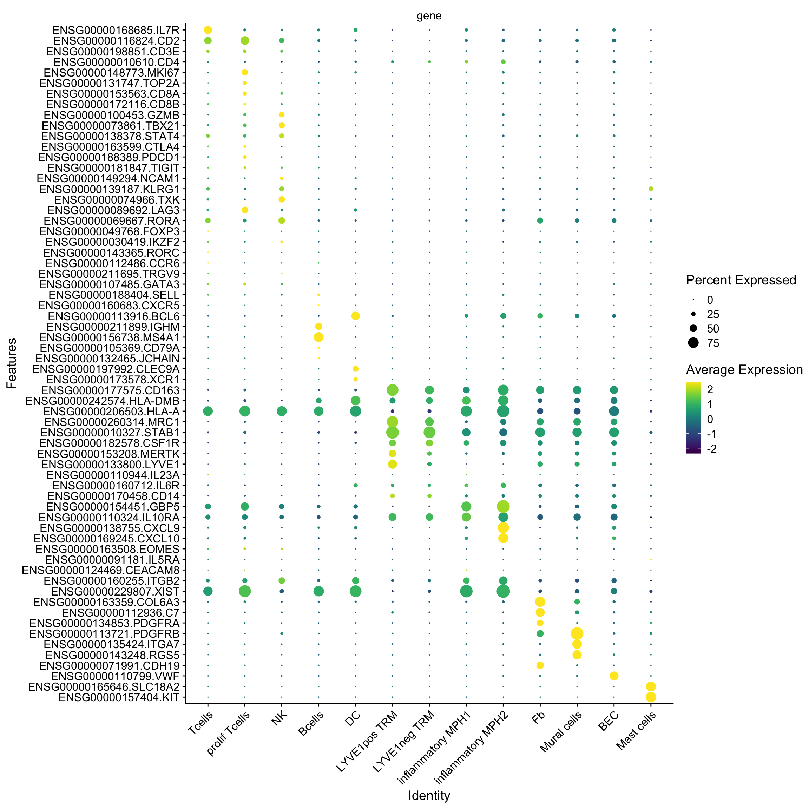

Activated clusters and immune cell clusters
Emily Payne
2024-11-07
Last updated: 2024-11-25
Checks: 5 2
Knit directory: Myocarditis
snRNAseq/analysis/
This reproducible R Markdown analysis was created with workflowr (version 1.7.1). The Checks tab describes the reproducibility checks that were applied when the results were created. The Past versions tab lists the development history.
The R Markdown is untracked by Git. To know which version of the R
Markdown file created these results, you’ll want to first commit it to
the Git repo. If you’re still working on the analysis, you can ignore
this warning. When you’re finished, you can run
wflow_publish to commit the R Markdown file and build the
HTML.
Great job! The global environment was empty. Objects defined in the global environment can affect the analysis in your R Markdown file in unknown ways. For reproduciblity it’s best to always run the code in an empty environment.
The command set.seed(12345) was run prior to running the
code in the R Markdown file. Setting a seed ensures that any results
that rely on randomness, e.g. subsampling or permutations, are
reproducible.
Great job! Recording the operating system, R version, and package versions is critical for reproducibility.
Nice! There were no cached chunks for this analysis, so you can be confident that you successfully produced the results during this run.
Using absolute paths to the files within your workflowr project makes it difficult for you and others to run your code on a different machine. Change the absolute path(s) below to the suggested relative path(s) to make your code more reproducible.
| absolute | relative |
|---|---|
| /Users/immbio/Desktop/Emily/Myocarditis snRNAseq/docs/Markers/DEGenesimmune | ../docs/Markers/DEGenesimmune |
| ~/Desktop/Emily/Myocarditis snRNAseq/data/01 Merged Seurat files/Myocarditis_allfiltered_V3_15.11.2024.rds | ../data/01 Merged Seurat files/Myocarditis_allfiltered_V3_15.11.2024.rds |
Great! You are using Git for version control. Tracking code development and connecting the code version to the results is critical for reproducibility.
The results in this page were generated with repository version 05dd5a3. See the Past versions tab to see a history of the changes made to the R Markdown and HTML files.
Note that you need to be careful to ensure that all relevant files for
the analysis have been committed to Git prior to generating the results
(you can use wflow_publish or
wflow_git_commit). workflowr only checks the R Markdown
file, but you know if there are other scripts or data files that it
depends on. Below is the status of the Git repository when the results
were generated:
Ignored files:
Ignored: .DS_Store
Ignored: .Rhistory
Ignored: .Rproj.user/
Ignored: analysis/.DS_Store
Ignored: analysis/.Rhistory
Ignored: data/
Untracked files:
Untracked: analysis/AM vs. Healthy subsets.Rmd
Untracked: analysis/DE genes AMsub vs. Healthy_V2.Rmd
Untracked: analysis/Immune_cells_V3.Rmd
Untracked: analysis/Interactome Analysis.Rmd
Untracked: analysis/Interactome Chellchat Analysis.Rmd
Untracked: analysis/T cells.Rmd
Unstaged changes:
Modified: analysis/Fibroblast_subset_V2.Rmd
Deleted: analysis/Immune_cells.Rmd
Modified: analysis/Myocarditis_snRNAseq_QC_merging_V3.Rmd
Modified: analysis/Stratification_Tcell_conditionV2.Rmd
Modified: analysis/Stratification_sex.Rmd
Modified: analysis/index.Rmd
Note that any generated files, e.g. HTML, png, CSS, etc., are not included in this status report because it is ok for generated content to have uncommitted changes.
There are no past versions. Publish this analysis with
wflow_publish() to start tracking its development.
## load merged file
seuratM <- readRDS("~/Desktop/Emily/Myocarditis snRNAseq/data/01 Merged Seurat files/Myocarditis_allfiltered_V3_15.11.2024.rds")
table(seuratM$RNA_snn_res.0.25)
0 1 2 3 4 5 6 7 8 9 10 11 12 13 14
17699 13639 12754 8222 5475 4836 3723 2365 2156 905 882 694 380 249 91 table(seuratM$patient)
Healthy 01 Healthy 02 Healthy 03 Healthy 04 Healthy 05 Healthy 06
3921 3818 4908 9882 1442 1998
Healthy 07 Healthy 08 AM 01 AM 02 AM 03 AM 04
841 1480 6286 4323 1123 208
AM 05 AM 06 AM 07 AM 08 AM 09 AM 10
579 335 1217 604 513 426
AM 11 AM 12 AM 13 AM 14 AM 15 AM 16
236 1192 2740 1684 4439 2247
AM 17 AM 18 CMP 01 CMP 02 CMP 03 CMP 04
316 608 105 227 730 1428
CMP 05 CMP 06 CMP 07 CMP 08 CMP 09 CMP 10
620 653 1268 2280 2396 545
CMP 11 CMP 12 CMP 13 Sarcoidosis 01 Sarcoidosis 02
781 491 111 2363 2706 table(seuratM$orig.ident)
74070 ## name Clusters
seuratM$clusterName <- "clusterName"
Idents(seuratM) <- seuratM$clusterName
seuratM$clusterName[which(seuratM$RNA_snn_res.0.25 %in% "0" )] <- "Fb1"
seuratM$clusterName[which(seuratM$RNA_snn_res.0.25 %in% "1" )] <- "BEC1"
seuratM$clusterName[which(seuratM$RNA_snn_res.0.25 %in% "2" )] <- "PeriFb1"
seuratM$clusterName[which(seuratM$RNA_snn_res.0.25 %in% "3" )] <- "Cardiomyocyte"
seuratM$clusterName[which(seuratM$RNA_snn_res.0.25 %in% "4" )] <- "MCP1"
seuratM$clusterName[which(seuratM$RNA_snn_res.0.25 %in% "5" )] <- "TC"
seuratM$clusterName[which(seuratM$RNA_snn_res.0.25 %in% "6" )] <- "MCP2"
seuratM$clusterName[which(seuratM$RNA_snn_res.0.25 %in% "7" )] <- "BEC2"
seuratM$clusterName[which(seuratM$RNA_snn_res.0.25 %in% "8" )] <- "VSMC"
seuratM$clusterName[which(seuratM$RNA_snn_res.0.25 %in% "9" )] <- "NC"
seuratM$clusterName[which(seuratM$RNA_snn_res.0.25 %in% "10" )] <- "INT1"
seuratM$clusterName[which(seuratM$RNA_snn_res.0.25 %in% "11" )] <- "Fb2"
seuratM$clusterName[which(seuratM$RNA_snn_res.0.25 %in% "12" )] <- "Fb3"
seuratM$clusterName[which(seuratM$RNA_snn_res.0.25 %in% "13" )] <- "PeriFb2"
seuratM$clusterName[which(seuratM$RNA_snn_res.0.25 %in% "14" )] <- "AdipoC"
colclusterName <- c("#D53E4F", "#f4a582", "#FEE08B","#feb24c","#67001f", "#01665e","#66C2A5","#c7eae5","#BEAED4", "#355C7D","#3288BD","#8c510a" ,"#fde0dd","#B45B5C","#dd1c77")
names(colclusterName) <- c("Cardiomyocyte","Fb1","Fb2","Fb3", "INT1", "PeriFb1", "PeriFb2", "VSMC","NC", "BEC1","BEC2", "AdipoC", "MCP1","MCP2","TC")
colpat_sub<- c("#dfc27d","#BE3144","#355C7D", "#779d8d")
seuratM$clusterName <- factor(seuratM$clusterName, levels=c("Cardiomyocyte", "Fb1", "Fb2", "Fb3", "INT1","PeriFb1", "PeriFb2", "VSMC", "NC", "BEC1", "BEC2", "AdipoC", "MCP1", "MCP2", "TC"))
Idents(seuratM) <- seuratM$clusterName
DimPlot(seuratM, reduction = "umap", pt.size = 0.1, label = TRUE, cols = colclusterName)
table(seuratM$patient, seuratM$TC)
Tcell High Tcell Intermediate Tcell Low Tcell Very Low
Healthy 01 0 0 0 3921
Healthy 02 0 0 0 3818
Healthy 03 0 0 0 4908
Healthy 04 0 0 0 9882
Healthy 05 0 0 0 1442
Healthy 06 0 0 0 1998
Healthy 07 0 0 0 841
Healthy 08 0 0 0 1480
AM 01 6286 0 0 0
AM 02 0 0 0 4323
AM 03 0 0 0 1123
AM 04 0 0 0 208
AM 05 0 0 0 579
AM 06 0 335 0 0
AM 07 0 0 0 1217
AM 08 0 0 604 0
AM 09 0 0 513 0
AM 10 0 0 0 426
AM 11 0 0 0 236
AM 12 0 0 0 1192
AM 13 0 2740 0 0
AM 14 0 0 1684 0
AM 15 0 0 4439 0
AM 16 2247 0 0 0
AM 17 316 0 0 0
AM 18 608 0 0 0
CMP 01 0 105 0 0
CMP 02 0 0 0 227
CMP 03 0 0 730 0
CMP 04 0 0 1428 0
CMP 05 0 0 620 0
CMP 06 0 0 0 653
CMP 07 0 0 1268 0
CMP 08 0 0 0 2280
CMP 09 0 0 0 2396
CMP 10 0 0 545 0
CMP 11 0 0 781 0
CMP 12 0 491 0 0
CMP 13 111 0 0 0
Sarcoidosis 01 0 0 2363 0
Sarcoidosis 02 0 0 2706 0## Subset from AM cohort, inflammatory clusters
seurat_immun <- subset(seuratM, clusterName %in% c("MCP1", "MCP2","TC"))
table(seurat_immun$orig.ident)
14034 table(seurat_immun$patient, seurat_immun$clusterName)
Cardiomyocyte Fb1 Fb2 Fb3 INT1 PeriFb1 PeriFb2 VSMC NC BEC1 BEC2 AdipoC MCP1
Healthy 01 0 0 0 0 0 0 0 0 0 0 0 0 362
Healthy 02 0 0 0 0 0 0 0 0 0 0 0 0 216
Healthy 03 0 0 0 0 0 0 0 0 0 0 0 0 647
Healthy 04 0 0 0 0 0 0 0 0 0 0 0 0 910
Healthy 05 0 0 0 0 0 0 0 0 0 0 0 0 185
Healthy 06 0 0 0 0 0 0 0 0 0 0 0 0 444
Healthy 07 0 0 0 0 0 0 0 0 0 0 0 0 131
Healthy 08 0 0 0 0 0 0 0 0 0 0 0 0 101
AM 01 0 0 0 0 0 0 0 0 0 0 0 0 17
AM 02 0 0 0 0 0 0 0 0 0 0 0 0 131
AM 03 0 0 0 0 0 0 0 0 0 0 0 0 91
AM 04 0 0 0 0 0 0 0 0 0 0 0 0 14
AM 05 0 0 0 0 0 0 0 0 0 0 0 0 58
AM 06 0 0 0 0 0 0 0 0 0 0 0 0 30
AM 07 0 0 0 0 0 0 0 0 0 0 0 0 66
AM 08 0 0 0 0 0 0 0 0 0 0 0 0 51
AM 09 0 0 0 0 0 0 0 0 0 0 0 0 58
AM 10 0 0 0 0 0 0 0 0 0 0 0 0 29
AM 11 0 0 0 0 0 0 0 0 0 0 0 0 14
AM 12 0 0 0 0 0 0 0 0 0 0 0 0 122
AM 13 0 0 0 0 0 0 0 0 0 0 0 0 294
AM 14 0 0 0 0 0 0 0 0 0 0 0 0 82
AM 15 0 0 0 0 0 0 0 0 0 0 0 0 313
AM 16 0 0 0 0 0 0 0 0 0 0 0 0 2
AM 17 0 0 0 0 0 0 0 0 0 0 0 0 58
AM 18 0 0 0 0 0 0 0 0 0 0 0 0 48
CMP 01 0 0 0 0 0 0 0 0 0 0 0 0 14
CMP 02 0 0 0 0 0 0 0 0 0 0 0 0 17
CMP 03 0 0 0 0 0 0 0 0 0 0 0 0 99
CMP 04 0 0 0 0 0 0 0 0 0 0 0 0 65
CMP 05 0 0 0 0 0 0 0 0 0 0 0 0 49
CMP 06 0 0 0 0 0 0 0 0 0 0 0 0 15
CMP 07 0 0 0 0 0 0 0 0 0 0 0 0 86
CMP 08 0 0 0 0 0 0 0 0 0 0 0 0 86
CMP 09 0 0 0 0 0 0 0 0 0 0 0 0 118
CMP 10 0 0 0 0 0 0 0 0 0 0 0 0 48
CMP 11 0 0 0 0 0 0 0 0 0 0 0 0 31
CMP 12 0 0 0 0 0 0 0 0 0 0 0 0 62
CMP 13 0 0 0 0 0 0 0 0 0 0 0 0 15
Sarcoidosis 01 0 0 0 0 0 0 0 0 0 0 0 0 172
Sarcoidosis 02 0 0 0 0 0 0 0 0 0 0 0 0 124
MCP2 TC
Healthy 01 6 73
Healthy 02 8 34
Healthy 03 21 42
Healthy 04 7 78
Healthy 05 1 22
Healthy 06 6 39
Healthy 07 1 15
Healthy 08 6 19
AM 01 2483 2824
AM 02 14 71
AM 03 2 19
AM 04 4 3
AM 05 7 10
AM 06 1 22
AM 07 7 5
AM 08 2 15
AM 09 0 13
AM 10 0 4
AM 11 0 0
AM 12 7 23
AM 13 18 212
AM 14 4 35
AM 15 23 144
AM 16 982 466
AM 17 5 82
AM 18 9 84
CMP 01 0 7
CMP 02 1 4
CMP 03 16 27
CMP 04 3 56
CMP 05 2 24
CMP 06 1 5
CMP 07 6 32
CMP 08 8 29
CMP 09 3 33
CMP 10 7 26
CMP 11 0 17
CMP 12 2 32
CMP 13 2 13
Sarcoidosis 01 35 56
Sarcoidosis 02 13 121table(seurat_immun$TC, seurat_immun$sex)
female male unknown
Tcell High 6945 145 0
Tcell Intermediate 53 641 0
Tcell Low 316 1539 0
Tcell Very Low 154 867 3374Idents(seurat_immun) <- seurat_immun$sex
colsex <- c("#dd1c77","#355C7D")
names(colsex) <- c("female", "male")
colcluster<- c( "#fde0dd","#B45B5C","#dd1c77")
names(colcluster) <- c("MCP1","MCP2","TC")
Idents(seurat_immun) <- seurat_immun$clusterName
DimPlot(seurat_immun, reduction = "umap", cols = colcluster, pt.size = 0.3)
table(seuratM$clusterName)
Cardiomyocyte Fb1 Fb2 Fb3 INT1 PeriFb1 PeriFb2
8222 17699 694 380 882 12754 249
VSMC NC BEC1 BEC2 AdipoC MCP1 MCP2
2156 905 13639 2365 91 5475 3723
TC
4836 ## GSEA and Normalization
seurat_immun <- NormalizeData (object = seurat_immun)
seurat_immun <- FindVariableFeatures(object = seurat_immun)
seurat_immun <- ScaleData(object = seurat_immun, verbose = TRUE)
seurat_immun <- RunPCA(object=seurat_immun, npcs = 30, verbose = FALSE)
seurat_immun <- RunTSNE(object=seurat_immun, reduction="pca", dims = 1:20)
seurat_immun <- RunUMAP(object=seurat_immun, reduction="pca", dims = 1:20)
seurat_immun <- FindNeighbors(object = seurat_immun, reduction = "pca", dims= 1:20)
res <- c(0.25, 0.6, 0.8, 0.4, 0.3)
for (i in 1:length(res)) {
seurat_immun <- FindClusters(object = seurat_immun, resolution = res[i], random.seed = 1234)
}Modularity Optimizer version 1.3.0 by Ludo Waltman and Nees Jan van Eck
Number of nodes: 14034
Number of edges: 505982
Running Louvain algorithm...
Maximum modularity in 10 random starts: 0.9343
Number of communities: 11
Elapsed time: 1 seconds
Modularity Optimizer version 1.3.0 by Ludo Waltman and Nees Jan van Eck
Number of nodes: 14034
Number of edges: 505982
Running Louvain algorithm...
Maximum modularity in 10 random starts: 0.8934
Number of communities: 16
Elapsed time: 1 seconds
Modularity Optimizer version 1.3.0 by Ludo Waltman and Nees Jan van Eck
Number of nodes: 14034
Number of edges: 505982
Running Louvain algorithm...
Maximum modularity in 10 random starts: 0.8741
Number of communities: 18
Elapsed time: 1 seconds
Modularity Optimizer version 1.3.0 by Ludo Waltman and Nees Jan van Eck
Number of nodes: 14034
Number of edges: 505982
Running Louvain algorithm...
Maximum modularity in 10 random starts: 0.9149
Number of communities: 14
Elapsed time: 1 seconds
Modularity Optimizer version 1.3.0 by Ludo Waltman and Nees Jan van Eck
Number of nodes: 14034
Number of edges: 505982
Running Louvain algorithm...
Maximum modularity in 10 random starts: 0.9267
Number of communities: 13
Elapsed time: 1 secondstable(seurat_immun$orig.ident)
14034 table(seurat_immun$clusterName)
Cardiomyocyte Fb1 Fb2 Fb3 INT1 PeriFb1 PeriFb2
0 0 0 0 0 0 0
VSMC NC BEC1 BEC2 AdipoC MCP1 MCP2
0 0 0 0 0 5475 3723
TC
4836 ## Different resolutions
Idents (seurat_immun) <- seurat_immun$clusterName
DimPlot(seurat_immun, reduction = "umap", pt.size = 0.3, label = TRUE)
Idents (seurat_immun) <- seurat_immun$RNA_snn_res.0.25
DimPlot(seurat_immun, reduction = "umap", pt.size = 0.3, label = TRUE)
Idents (seurat_immun) <- seurat_immun$RNA_snn_res.0.3
DimPlot(seurat_immun, reduction = "umap", pt.size = 0.3, label = TRUE)
Idents (seurat_immun) <- seurat_immun$RNA_snn_res.0.4
DimPlot(seurat_immun, reduction = "umap", pt.size = 0.3, label = TRUE)
Idents (seurat_immun) <- seurat_immun$RNA_snn_res.0.6
DimPlot(seurat_immun, reduction = "umap", pt.size = 0.3, label = TRUE)
Idents (seurat_immun) <- seurat_immun$RNA_snn_res.0.8
DimPlot(seurat_immun, reduction = "umap", pt.size = 0.3, label = TRUE)
## Immun cell clusters by patient
Idents (seurat_immun) <- (seurat_immun$patient)
DimPlot(seurat_immun, reduction = "umap", pt.size = 0.3)
table(seurat_immun$patient, seurat_immun$RNA_snn_res.0.3)
0 1 2 3 4 5 6 7 8 9 10 11 12
Healthy 01 52 299 22 0 11 0 26 8 4 14 1 1 3
Healthy 02 27 62 134 2 6 0 8 7 2 5 0 1 4
Healthy 03 34 442 129 1 25 0 27 25 0 23 2 0 2
Healthy 04 46 658 67 0 10 0 89 64 3 52 3 3 0
Healthy 05 8 131 38 0 1 0 1 5 1 15 0 0 8
Healthy 06 28 365 56 3 0 1 5 4 0 16 0 0 11
Healthy 07 3 93 20 1 9 0 0 9 4 4 0 0 4
Healthy 08 14 65 27 1 3 0 4 6 1 5 0 0 0
AM 01 2000 2 10 1989 766 81 31 44 39 27 215 119 1
AM 02 47 7 111 1 0 0 20 3 15 9 0 2 1
AM 03 8 0 92 0 0 0 2 2 8 0 0 0 0
AM 04 2 0 13 3 0 0 1 2 0 0 0 0 0
AM 05 2 1 50 0 1 0 7 3 5 5 0 1 0
AM 06 16 7 15 0 0 0 5 4 5 0 1 0 0
AM 07 3 26 22 1 11 0 7 1 0 5 1 0 1
AM 08 5 6 34 0 2 0 7 0 4 9 0 0 1
AM 09 10 6 45 0 0 0 4 1 2 3 0 0 0
AM 10 3 9 14 0 0 0 2 3 0 1 0 0 1
AM 11 0 3 10 0 0 0 0 0 0 1 0 0 0
AM 12 9 0 116 0 5 0 3 6 11 1 0 0 1
AM 13 153 246 14 3 10 1 39 16 6 28 7 1 0
AM 14 20 4 66 1 1 0 8 5 8 7 1 0 0
AM 15 89 2 271 1 1 0 16 22 34 29 6 6 3
AM 16 209 0 8 82 216 770 2 78 17 27 22 19 0
AM 17 68 23 32 1 1 0 5 5 2 0 8 0 0
AM 18 65 30 18 3 1 0 7 5 0 8 3 1 0
CMP 01 6 6 7 0 0 0 0 2 0 0 0 0 0
CMP 02 1 0 12 1 0 0 3 2 2 0 0 0 1
CMP 03 12 17 47 0 0 0 40 7 8 10 1 0 0
CMP 04 26 9 46 0 1 0 6 12 20 4 0 0 0
CMP 05 6 32 13 1 2 0 2 2 15 2 0 0 0
CMP 06 4 3 11 0 0 0 1 1 0 1 0 0 0
CMP 07 13 3 84 1 0 0 5 1 11 1 1 0 4
CMP 08 25 6 84 0 1 0 1 0 4 0 1 0 1
CMP 09 15 1 102 0 0 0 13 5 10 6 2 0 0
CMP 10 10 5 46 1 1 0 0 0 15 2 1 0 0
CMP 11 6 1 29 0 0 0 2 0 6 1 0 0 3
CMP 12 14 4 54 1 0 0 2 3 16 0 0 0 2
CMP 13 7 1 14 1 0 0 0 0 7 0 0 0 0
Sarcoidosis 01 26 21 138 9 0 0 15 11 23 12 5 3 0
Sarcoidosis 02 46 3 122 0 1 0 4 6 71 2 3 0 0table(seurat_immun$orig.ident)
14034 table(seurat_immun$patient)
Healthy 01 Healthy 02 Healthy 03 Healthy 04 Healthy 05 Healthy 06
441 258 710 995 208 489
Healthy 07 Healthy 08 AM 01 AM 02 AM 03 AM 04
147 126 5324 216 112 21
AM 05 AM 06 AM 07 AM 08 AM 09 AM 10
75 53 78 68 71 33
AM 11 AM 12 AM 13 AM 14 AM 15 AM 16
14 152 524 121 480 1450
AM 17 AM 18 CMP 01 CMP 02 CMP 03 CMP 04
145 141 21 22 142 124
CMP 05 CMP 06 CMP 07 CMP 08 CMP 09 CMP 10
75 21 124 123 154 81
CMP 11 CMP 12 CMP 13 Sarcoidosis 01 Sarcoidosis 02
48 96 30 263 258 ## TC condition for immun cell clusters
Idents (seurat_immun) <- (seurat_immun$TC)
colTC <- c("#BE3144","#de2d26","#fc9272", "#fee0d2")
names(colTC) <- c("Tcell High", "Tcell Intermediate", "Tcell Low", "Tcell Very Low")
DimPlot(seurat_immun, reduction = "umap", pt.size = 0.3, cols = colTC)
Idents(seurat_immun) <- seurat_immun$RNA_snn_res.0.3
DimPlot(seurat_immun, reduction = "umap", pt.size = 0.3, label = TRUE)
## Find all markers within AM cohort, only positive
DEGenesimmun <- FindAllMarkers (seurat_immun, only.pos = TRUE, logfc.threshold = 0.2) %>%
dplyr::filter(p_val_adj < 0.01)
#write.table(DEGenesimmun, file= "/Users/immbio/Desktop/Emily/Myocarditis snRNAseq/docs/Markers/DEGenesimmune", sep="\t",quote=F,row.names=F,col.names=T)
table(seurat_immun$clusterName)
Cardiomyocyte Fb1 Fb2 Fb3 INT1 PeriFb1 PeriFb2
0 0 0 0 0 0 0
VSMC NC BEC1 BEC2 AdipoC MCP1 MCP2
0 0 0 0 0 5475 3723
TC
4836 table(seurat_immun$RNA_snn_res.0.3)
0 1 2 3 4 5 6 7 8 9 10 11 12
3138 2599 2243 2108 1086 853 420 380 379 335 284 157 52 head(DEGenesimmun) p_val avg_log2FC pct.1 pct.2 p_val_adj cluster gene
ENSG00000054654.SYNE2 0 2.570780 0.744 0.235 0 0 ENSG00000054654.SYNE2
ENSG00000168685.IL7R 0 4.242586 0.562 0.076 0 0 ENSG00000168685.IL7R
ENSG00000116824.CD2 0 2.436738 0.497 0.134 0 0 ENSG00000116824.CD2
ENSG00000127152.BCL11B 0 2.932358 0.448 0.095 0 0 ENSG00000127152.BCL11B
ENSG00000072818.ACAP1 0 2.319228 0.484 0.152 0 0 ENSG00000072818.ACAP1
ENSG00000215252.GOLGA8B 0 2.649740 0.462 0.135 0 0 ENSG00000215252.GOLGA8B#View(DEGenesimmun)## Marker Genes
get_full_gene_name <- function(gene, obj){
return(grep(gene,rownames(obj), value =TRUE))
}
get_full_gene_name("XIST",seurat_immun) [1] "ENSG00000229807.XIST"FeaturePlot(seuratM, features = get_full_gene_name("XIST",seuratM) , pt.size = 1, cols = c("lightgrey", "#BE3144"))# NK
FeaturePlot(seurat_immun, features = "ENSG00000081237.PTPRC", pt.size = 1, cols = c("lightgrey", "#BE3144"))
FeaturePlot(seurat_immun, features = "ENSG00000168685.IL7R", pt.size = 1, cols = c("lightgrey", "#BE3144"))
FeaturePlot(seurat_immun, features = "ENSG00000010610.CD4", pt.size = 1, cols = c("lightgrey", "#BE3144"))
FeaturePlot(seurat_immun, features = "ENSG00000172116.CD8B", pt.size = 1, cols = c("lightgrey", "#BE3144"))
FeaturePlot(seurat_immun, features = get_full_gene_name("CD8A",seurat_immun) , pt.size = 1, cols = c("lightgrey", "#BE3144"))# 
FeaturePlot(seurat_immun, features = "ENSG00000116824.CD2", pt.size = 1, cols = c("lightgrey", "#BE3144"))
FeaturePlot(seurat_immun, features = "ENSG00000167286.CD3D", pt.size = 1, cols = c("lightgrey", "#BE3144"))
FeaturePlot(seurat_immun, features = "ENSG00000198851.CD3E", pt.size = 1, cols = c("lightgrey", "#BE3144"))
FeaturePlot(seurat_immun, features = "ENSG00000178562.CD28", pt.size = 1, cols = c("lightgrey", "#BE3144"))
FeaturePlot(seurat_immun, features = get_full_gene_name("CD96",seurat_immun) , pt.size = 1, cols = c("lightgrey", "#BE3144"))# 
FeaturePlot(seurat_immun, features = get_full_gene_name("RIPOR2",seurat_immun) , pt.size = 1, cols = c("lightgrey", "#BE3144"))# 
FeaturePlot(seurat_immun, features = "ENSG00000227507.LTB", pt.size = 1, cols = c("lightgrey", "#BE3144"))# Cluster 1 spec
FeaturePlot(seurat_immun, features = "ENSG00000069667.RORA", pt.size = 1, cols = c("lightgrey", "#BE3144"))# Cluster 1
FeaturePlot(seurat_immun, features = get_full_gene_name("PATJ",seurat_immun) , pt.size = 1, cols = c("lightgrey", "#BE3144"))# 
#cl 6: CD8+ T cells proliferating ASPM, RRM2, KNL1, FANC; TOP2A, CEP152, DIAPH3, KIF18B, KIF14, CDCA3, TROAP, SAC3D1, MS4A7, ZNF683, GEN1, SAC8D1, SKA3, RAD54L, UWOMT. SPC25, BRACA1, BUB1B, Gen1, FoxM1, SKA3, CCNB1, SAC8D1, FANCI, CIT, SPAG5, ZNF683, E2F2, ZWINT
FeaturePlot(seurat_immun, features = "ENSG00000163599.CTLA4", pt.size = 1, cols = c("lightgrey", "#BE3144"))
FeaturePlot(seurat_immun, features = get_full_gene_name("LAG3",seurat_immun) , pt.size = 1, cols = c("lightgrey", "#BE3144"))# exhaustion
FeaturePlot(seurat_immun, features = get_full_gene_name("TIGIT",seurat_immun) , pt.size = 1, cols = c("lightgrey", "#BE3144"))# 
FeaturePlot(seurat_immun, features = get_full_gene_name("PDCD1",seurat_immun) , pt.size = 1, cols = c("lightgrey", "#BE3144"))# 
FeaturePlot(seurat_immun, features = get_full_gene_name("HAVCR2",seurat_immun) , pt.size = 1, cols = c("lightgrey", "#BE3144"))# 
FeaturePlot(seurat_immun, features = get_full_gene_name("FOXP3",seurat_immun) , pt.size = 1, cols = c("lightgrey", "#BE3144"))# Tregs
FeaturePlot(seurat_immun, features = "ENSG00000136634.IL10", pt.size = 1, cols = c("lightgrey", "#BE3144"))
FeaturePlot(seurat_immun, features = get_full_gene_name("TGFB1",seurat_immun) , pt.size = 1, cols = c("lightgrey", "#BE3144"))# 
FeaturePlot(seurat_immun, features = get_full_gene_name("STAT5A",seurat_immun) , pt.size = 1, cols = c("lightgrey", "#BE3144"))# 
FeaturePlot(seurat_immun, features = get_full_gene_name("STAT5B",seurat_immun) , pt.size = 1, cols = c("lightgrey", "#BE3144"))# 
FeaturePlot(seurat_immun, features = get_full_gene_name("RORC",seurat_immun) , pt.size = 1, cols = c("lightgrey", "#BE3144"))# Th17 (and also IL3)
FeaturePlot(seurat_immun, features = get_full_gene_name("IL22",seurat_immun) , pt.size = 1, cols = c("lightgrey", "#BE3144"))# 
FeaturePlot(seurat_immun, features = get_full_gene_name("STAT3",seurat_immun) , pt.size = 1, cols = c("lightgrey", "#BE3144"))# 
FeaturePlot(seurat_immun, features = get_full_gene_name("IL17RA",seurat_immun) , pt.size = 1, cols = c("lightgrey", "#BE3144"))# did not find IL17A, only R
FeaturePlot(seurat_immun, features = get_full_gene_name("CCR6",seurat_immun) , pt.size = 1, cols = c("lightgrey", "#BE3144"))
FeaturePlot(seurat_immun, features = "ENSG00000162594.IL23R", pt.size = 1, cols = c("lightgrey", "#BE3144"))
FeaturePlot(seurat_immun, features = "ENSG00000138795.LEF1", pt.size = 1, cols = c("lightgrey", "#BE3144"))
FeaturePlot(seurat_immun, features = "ENSG00000109906.ZBTB16", pt.size = 1, cols = c("lightgrey", "#BE3144")) 
FeaturePlot(seurat_immun, features = "ENSG00000165810.BTNL9", pt.size = 1, cols = c("lightgrey", "#BE3144")) # MAIT
FeaturePlot(seurat_immun, features = get_full_gene_name("TBX21",seurat_immun) , pt.size = 1, cols = c("lightgrey", "#BE3144"))# Th1
FeaturePlot(seurat_immun, features = get_full_gene_name("IFNG",seurat_immun) , pt.size = 1, cols = c("lightgrey", "#BE3144"))# 
FeaturePlot(seurat_immun, features = get_full_gene_name("IL12RB1",seurat_immun) , pt.size = 1, cols = c("lightgrey", "#BE3144"))#
FeaturePlot(seurat_immun, features = get_full_gene_name("CXCR3",seurat_immun) , pt.size = 1, cols = c("lightgrey", "#BE3144"))# 
FeaturePlot(seurat_immun, features = get_full_gene_name("STAT4",seurat_immun) , pt.size = 1, cols = c("lightgrey", "#BE3144"))# 
FeaturePlot(seurat_immun, features = get_full_gene_name("GATA3",seurat_immun) , pt.size = 1, cols = c("lightgrey", "#BE3144"))# Th2
FeaturePlot(seurat_immun, features = get_full_gene_name("BCL6",seurat_immun) , pt.size = 1, cols = c("lightgrey", "#BE3144"))# Tfh
FeaturePlot(seurat_immun, features = get_full_gene_name("IL21",seurat_immun) , pt.size = 1, cols = c("lightgrey", "#BE3144"))# 
FeaturePlot(seurat_immun, features = "ENSG00000163600.ICOS", pt.size = 1, cols = c("lightgrey", "#BE3144"))
FeaturePlot(seurat_immun, features = get_full_gene_name("CCR5",seurat_immun) , pt.size = 1, cols = c("lightgrey", "#BE3144"))
FeaturePlot(seurat_immun, features = "ENSG00000172116.CD8B", pt.size = 1, cols = c("lightgrey", "#BE3144"))
FeaturePlot(seurat_immun, features = get_full_gene_name("KIR2",seurat_immun) , pt.size = 1, cols = c("lightgrey", "#BE3144"))# 
FeaturePlot(seurat_immun, features = get_full_gene_name("GZMB",seurat_immun) , pt.size = 1, cols = c("lightgrey", "#BE3144"))# 
FeaturePlot(seurat_immun, features = get_full_gene_name("PRF1",seurat_immun) , pt.size = 1, cols = c("lightgrey", "#BE3144"))# 
FeaturePlot(seurat_immun, features = "ENSG00000104970.KIR3DX1", pt.size = 1, cols = c("lightgrey", "#BE3144"))
FeaturePlot(seurat_immun, features = "ENSG00000111537.IFNG", pt.size = 1, cols = c("lightgrey", "#BE3144"))
FeaturePlot(seurat_immun, features = get_full_gene_name("TRGV9",seurat_immun) , pt.size = 1, cols = c("lightgrey", "#BE3144")) #yd Tcells
FeaturePlot(seurat_immun, features = get_full_gene_name("TRDV2",seurat_immun) , pt.size = 1, cols = c("lightgrey", "#BE3144")) # 
FeaturePlot(seurat_immun, features = get_full_gene_name("TRGC1",seurat_immun) , pt.size = 1, cols = c("lightgrey", "#BE3144")) 
FeaturePlot(seurat_immun, features = get_full_gene_name("KIR3DL1",seurat_immun) , pt.size = 1, cols = c("lightgrey", "#BE3144"))# NK
FeaturePlot(seurat_immun, features = get_full_gene_name("TXK",seurat_immun) , pt.size = 1, cols = c("lightgrey", "#BE3144"))# 
FeaturePlot(seurat_immun, features = get_full_gene_name("NCAM1",seurat_immun) , pt.size = 1, cols = c("lightgrey", "#BE3144")) #CD56,NK marker
FeaturePlot(seurat_immun, features = get_full_gene_name("KLRD1",seurat_immun) , pt.size = 1, cols = c("lightgrey", "#BE3144")) # CD94
FeaturePlot(seurat_immun, features = get_full_gene_name("FCGR3A",seurat_immun) , pt.size = 1, cols = c("lightgrey", "#BE3144")) #CD16
FeaturePlot(seurat_immun, features = get_full_gene_name("GZMB",seurat_immun) , pt.size = 1, cols = c("lightgrey", "#BE3144"))
FeaturePlot(seurat_immun, features = get_full_gene_name("NCR1",seurat_immun) , pt.size = 1, cols = c("lightgrey", "#BE3144"))# NK
FeaturePlot(seurat_immun, features = "ENSG00000189430.NCR1", pt.size = 1, cols = c("lightgrey", "#BE3144"))
FeaturePlot(seurat_immun, features = "ENSG00000004468.CD38", pt.size = 1, cols = c("lightgrey", "#BE3144"))
FeaturePlot(seurat_immun, features = get_full_gene_name("JCHAIN",seurat_immun) , pt.size = 1, cols = c("lightgrey", "#BE3144"))# plasma cells
FeaturePlot(seurat_immun, features = "ENSG00000057657.PRDM1", pt.size = 1, cols = c("lightgrey", "#BE3144"))
FeaturePlot(seurat_immun, features = "ENSG00000211899.IGHM", pt.size = 1, cols = c("lightgrey", "#BE3144"))## proliferating cells 
FeaturePlot(seurat_immun, features = "ENSG00000156738.MS4A1", pt.size = 1, cols = c("lightgrey", "#BE3144")) # CD20
FeaturePlot(seurat_immun, features = get_full_gene_name("CD19",seurat_immun) , pt.size = 1, cols = c("lightgrey", "#BE3144"))# 
FeaturePlot(seurat_immun, features = "ENSG00000148773.MKI67", pt.size = 1, cols = c("lightgrey", "#BE3144"))## proliferating cells
FeaturePlot(seurat_immun, features = get_full_gene_name("TOP2A",seurat_immun) , pt.size = 1, cols = c("lightgrey", "#BE3144"))
FeaturePlot(seurat_immun, features = get_full_gene_name("SELL",seurat_immun) , pt.size = 1, cols = c("lightgrey", "#BE3144")) # SELL = CD62L# naive
FeaturePlot(seurat_immun, features = get_full_gene_name("PTPRC",seurat_immun) , pt.size = 1, cols = c("lightgrey", "#BE3144")) #CD45
FeaturePlot(seurat_immun, features = get_full_gene_name("CCR7",seurat_immun) , pt.size = 1, cols = c("lightgrey", "#BE3144"))
FeaturePlot(seurat_immun, features = get_full_gene_name("CXCL12",seurat_immun) , pt.size = 1, cols = c("lightgrey", "#BE3144"))
FeaturePlot(seurat_immun, features = "ENSG00000110448.CD5", pt.size = 1, cols = c("lightgrey", "#BE3144"))
#FeaturePlot(seurat_immun, features = "ENSG00000197471.SPN", pt.size = 1, cols = c("lightgrey", "#BE3144")) # CD43 (sialoprotein of leukos, regulates T cell traffickinig to LN)
FeaturePlot(seurat_immun, features = get_full_gene_name("CLEC9A",seurat_immun) , pt.size = 1, cols = c("lightgrey", "#BE3144"))# DC
FeaturePlot(seurat_immun, features = get_full_gene_name("XCR1",seurat_immun) , pt.size = 1, cols = c("lightgrey", "#BE3144"))# 
FeaturePlot(seurat_immun, features = get_full_gene_name("SEPTIN3",seurat_immun) , pt.size = 1, cols = c("lightgrey", "#BE3144"))# 
FeaturePlot(seurat_immun, features = get_full_gene_name("WDFY4",seurat_immun) , pt.size = 1, cols = c("lightgrey", "#BE3144"))# 
FeaturePlot(seurat_immun, features = get_full_gene_name("CCR9",seurat_immun) , pt.size = 1, cols = c("lightgrey", "#BE3144"))# 
FeaturePlot(seurat_immun, features = get_full_gene_name("PACSIN1",seurat_immun) , pt.size = 1, cols = c("lightgrey", "#BE3144"))# 
FeaturePlot(seurat_immun, features = "ENSG00000182578.CSF1R", pt.size = 1, cols = c("lightgrey", "#BE3144"))
FeaturePlot(seurat_immun, features = get_full_gene_name("VCAM1",seurat_immun) , pt.size = 1, cols = c("lightgrey", "#BE3144"))# 
FeaturePlot(seurat_immun, features = get_full_gene_name("MERTK",seurat_immun) , pt.size = 1, cols = c("lightgrey", "#BE3144"))# 
FeaturePlot(seurat_immun, features = get_full_gene_name("MS4A4A",seurat_immun) , pt.size = 1, cols = c("lightgrey", "#BE3144"))# 
FeaturePlot(seurat_immun, features = get_full_gene_name("FKBP5",seurat_immun) , pt.size = 1, cols = c("lightgrey", "#BE3144"))# 
FeaturePlot(seurat_immun, features = get_full_gene_name("ITGAM",seurat_immun) , pt.size = 1, cols = c("lightgrey", "#BE3144")) # CD11b
FeaturePlot(seurat_immun, features = get_full_gene_name("STAT1",seurat_immun) , pt.size = 1, cols = c("lightgrey", "#BE3144"))
FeaturePlot(seurat_immun, features = get_full_gene_name("TIMD4",seurat_immun) , pt.size = 1, cols = c("lightgrey", "#BE3144"))# TLFpos res.Macrophages
FeaturePlot(seurat_immun, features = "ENSG00000177575.CD163", pt.size = 1, cols = c("lightgrey", "#BE3144"))
FeaturePlot(seurat_immun, features = get_full_gene_name("LYVE1",seurat_immun) , pt.size = 1, cols = c("lightgrey", "#BE3144"))# 
FeaturePlot(seurat_immun, features = get_full_gene_name("FOLR2",seurat_immun) , pt.size = 1, cols = c("lightgrey", "#BE3144"))# 
FeaturePlot(seurat_immun, features = get_full_gene_name("GAS6",seurat_immun) , pt.size = 1, cols = c("lightgrey", "#BE3144"))# 
FeaturePlot(seurat_immun, features = get_full_gene_name("NINJ1",seurat_immun) , pt.size = 1, cols = c("lightgrey", "#BE3144"))# 
FeaturePlot(seurat_immun, features = get_full_gene_name("MRC1",seurat_immun) , pt.size = 1, cols = c("lightgrey", "#BE3144"))# 
FeaturePlot(seurat_immun, features = get_full_gene_name("IGF1",seurat_immun) , pt.size = 1, cols = c("lightgrey", "#BE3144"))#
FeaturePlot(seurat_immun, features = get_full_gene_name("SELENOP",seurat_immun) , pt.size = 1, cols = c("lightgrey", "#BE3144"))# 
FeaturePlot(seurat_immun, features = get_full_gene_name("IGFBP4",seurat_immun) , pt.size = 1, cols = c("lightgrey", "#BE3144"))#
## features of resident mph cluster 2 vs. cluster 1 (LYVE1+): SLC40A1 (iron transport), ITGAX (integrin), FCN1 (PRR), CD300E, ITGA4 (integrin), SPN, UICLM, CD1C, CLEC4F (pDCs), PCNX2, SOX4 Cluster 2 resident mph
FeaturePlot(seurat_immun, features = get_full_gene_name("SLC40A1",seurat_immun) , pt.size = 1, cols = c("lightgrey", "#BE3144"))# 
FeaturePlot(seurat_immun, features = get_full_gene_name("ITGAX",seurat_immun) , pt.size = 1, cols = c("lightgrey", "#BE3144"))# 
FeaturePlot(seurat_immun, features = get_full_gene_name("FCN1",seurat_immun) , pt.size = 1, cols = c("lightgrey", "#BE3144"))# 
FeaturePlot(seurat_immun, features = get_full_gene_name("CD1C",seurat_immun) , pt.size = 1, cols = c("lightgrey", "#BE3144"))#
FeaturePlot(seurat_immun, features = get_full_gene_name("CLEC4F",seurat_immun) , pt.size = 1, cols = c("lightgrey", "#BE3144"))# 
FeaturePlot(seurat_immun, features = get_full_gene_name("PCNX2",seurat_immun) , pt.size = 1, cols = c("lightgrey", "#BE3144"))# 
FeaturePlot(seurat_immun, features = get_full_gene_name("SOX4",seurat_immun) , pt.size = 1, cols = c("lightgrey", "#BE3144"))#
FeaturePlot(seurat_immun, features = get_full_gene_name("APOE",seurat_immun) , pt.size = 1, cols = c("lightgrey", "#BE3144"))# MHC-II hi res. MCPs
FeaturePlot(seurat_immun, features = get_full_gene_name("CD14",seurat_immun) , pt.size = 1, cols = c("lightgrey", "#BE3144"))# 
FeaturePlot(seurat_immun, features = get_full_gene_name("CST3",seurat_immun) , pt.size = 1, cols = c("lightgrey", "#BE3144"))# 
FeaturePlot(seurat_immun, features = get_full_gene_name("TREM2",seurat_immun) , pt.size = 1, cols = c("lightgrey", "#BE3144"))# 
FeaturePlot(seurat_immun, features = get_full_gene_name("LILRA5",seurat_immun) , pt.size = 1, cols = c("lightgrey", "#BE3144"))# 
FeaturePlot(seurat_immun, features = get_full_gene_name("C5orf1",seurat_immun) , pt.size = 1, cols = c("lightgrey", "#BE3144"))# 
FeaturePlot(seurat_immun, features = get_full_gene_name("STAB1",seurat_immun) , pt.size = 1, cols = c("lightgrey", "#BE3144"))# 
FeaturePlot(seurat_immun, features = get_full_gene_name("CCR2",seurat_immun) , pt.size = 1, cols = c("lightgrey", "#BE3144"))# CCR2+ MCP
FeaturePlot(seurat_immun, features = get_full_gene_name("CD52",seurat_immun) , pt.size = 1, cols = c("lightgrey", "#BE3144"))# 
FeaturePlot(seurat_immun, features = get_full_gene_name("HLA-DMB",seurat_immun) , pt.size = 1, cols = c("lightgrey", "#BE3144"))
FeaturePlot(seurat_immun, features = get_full_gene_name("HLA-A",seurat_immun) , pt.size = 1, cols = c("lightgrey", "#BE3144"))
FeaturePlot(seurat_immun, features = get_full_gene_name("HLA-DQB1",seurat_immun) , pt.size = 1, cols = c("lightgrey", "#BE3144"))
FeaturePlot(seurat_immun, features = get_full_gene_name("S100A6",seurat_immun) , pt.size = 1, cols = c("lightgrey", "#BE3144"))# 
FeaturePlot(seurat_immun, features = "ENSG00000163191.S100A11", pt.size = 1, cols = c("lightgrey", "#BE3144"))
FeaturePlot(seurat_immun, features = get_full_gene_name("CORO1A",seurat_immun) , pt.size = 1, cols = c("lightgrey", "#BE3144"))#
FeaturePlot(seurat_immun, features = get_full_gene_name("TMEM119",seurat_immun) , pt.size = 1, cols = c("lightgrey", "#BE3144"))#
FeaturePlot(seurat_immun, features = "ENSG00000163508.EOMES", pt.size = 1, cols = c("lightgrey", "#BE3144")) 
FeaturePlot(seurat_immun, features = "ENSG00000170458.CD14", pt.size = 1, cols = c("lightgrey", "#BE3144"))
FeaturePlot(seurat_immun, features = get_full_gene_name("CXCR3",seurat_immun) , pt.size = 1, cols = c("lightgrey", "#BE3144"))# 
FeaturePlot(seurat_immun, features = get_full_gene_name("CXCL9",seurat_immun) , pt.size = 1, cols = c("lightgrey", "#BE3144"))# inflammatory macrophages
FeaturePlot(seurat_immun, features = get_full_gene_name("CXCL10",seurat_immun) , pt.size = 1, cols = c("lightgrey", "#BE3144"))# 
FeaturePlot(seurat_immun, features = get_full_gene_name("CXCL11",seurat_immun) , pt.size = 1, cols = c("lightgrey", "#BE3144"))# 
FeaturePlot(seurat_immun, features = get_full_gene_name("IL23A",seurat_immun) , pt.size = 1, cols = c("lightgrey", "#BE3144"))# 
FeaturePlot(seurat_immun, features = get_full_gene_name("TREM2",seurat_immun) , pt.size = 1, cols = c("lightgrey", "#BE3144"))# 
FeaturePlot(seurat_immun, features = get_full_gene_name("MMP9",seurat_immun) , pt.size = 1, cols = c("lightgrey", "#BE3144"))# 
FeaturePlot(seurat_immun, features = get_full_gene_name("IL1B",seurat_immun) , pt.size = 1, cols = c("lightgrey", "#BE3144"))# 
FeaturePlot(seurat_immun, features = get_full_gene_name("IL6R",seurat_immun) , pt.size = 1, cols = c("lightgrey", "#BE3144"))#
FeaturePlot(seurat_immun, features = "ENSG00000232810.TNF", pt.size = 1, cols = c("lightgrey", "#BE3144"))
FeaturePlot(seurat_immun, features = "ENSG00000136244.IL6", pt.size = 1, cols = c("lightgrey", "#BE3144"))
FeaturePlot(seurat_immun, features = get_full_gene_name("TLR4",seurat_immun) , pt.size = 1, cols = c("lightgrey", "#BE3144"))# 
FeaturePlot(seurat_immun, features = get_full_gene_name("XIST",seurat_immun) , pt.size = 1, cols = c("lightgrey", "#BE3144"))
FeaturePlot(seurat_immun, features = get_full_gene_name("IL32",seurat_immun) , pt.size = 1, cols = c("lightgrey", "#BE3144"))
FeaturePlot(seurat_immun, features = "ENSG00000183160.TMEM119", pt.size = 1, cols = c("lightgrey", "#BE3144")) # also found on microglia
FeaturePlot(seurat_immun, features = get_full_gene_name("CCL18",seurat_immun) , pt.size = 1, cols = c("lightgrey", "#BE3144"))
FeaturePlot(seurat_immun, features = get_full_gene_name("CPM",seurat_immun) , pt.size = 1, cols = c("lightgrey", "#BE3144"))
FeaturePlot(seurat_immun, features = get_full_gene_name("ZBTB16",seurat_immun) , pt.size = 1, cols = c("lightgrey", "#BE3144"))
FeaturePlot(seurat_immun, features = get_full_gene_name("ALOX15B",seurat_immun) , pt.size = 1, cols = c("lightgrey", "#BE3144"))
FeaturePlot(seurat_immun, features = get_full_gene_name("HCLS1",seurat_immun) , pt.size = 1, cols = c("lightgrey", "#BE3144"))
FeaturePlot(seurat_immun, features = get_full_gene_name("ADAMTS2",seurat_immun) , pt.size = 1, cols = c("lightgrey", "#BE3144"))
FeaturePlot(seurat_immun, features = get_full_gene_name("TBC1D16",seurat_immun) , pt.size = 1, cols = c("lightgrey", "#BE3144"))
FeaturePlot(seurat_immun, features = get_full_gene_name("SLC31A2",seurat_immun) , pt.size = 1, cols = c("lightgrey", "#BE3144")) # copper transporter
FeaturePlot(seurat_immun, features = get_full_gene_name("LPAR6",seurat_immun) , pt.size = 1, cols = c("lightgrey", "#BE3144")) # 
FeaturePlot(seurat_immun, features = get_full_gene_name("SPRED1",seurat_immun) , pt.size = 1, cols = c("lightgrey", "#BE3144"))# inhibits growth factor activation, negatively regulates HSC 
FeaturePlot(seurat_immun, features = get_full_gene_name("ABCA6",seurat_immun) , pt.size = 1, cols = c("lightgrey", "#BE3144")) # macrophage lipid transport
## DE genes resident macrophages cl 2 and 7
## cl 7 ZBTB16, CPM, PDK4, ALOX15B, CCL18, SLCA3, KCNMA1, ADAMTS2, HCLS1, APOE1, ZNF812P, HCLS1, TBC1D16, SLC31A2, TFBI,
## cl2: LPAR6, ABCA6, SPRED1
## ZBTB16 Acts as a transcriptional repressor (PubMed:10688654, 24359566). Transcriptional repression may be mediated through recruitment of histone deacetylases to target promoters (PubMed:10688654). May play a role in myeloid maturation and in the development and/or maintenance of other differentiated tissues. Probable substrate-recognition component of an E3 ubiquitin-protein ligase complex which mediates the ubiquitination and subsequent proteasomal degradation of target proteins
FeaturePlot(seurat_immun, features = get_full_gene_name("CD72",seurat_immun) , pt.size = 1, cols = c("lightgrey", "#BE3144")) # activated macrophages, cluster 0
FeaturePlot(seurat_immun, features = get_full_gene_name("LY86",seurat_immun) , pt.size = 1, cols = c("lightgrey", "#BE3144"))
FeaturePlot(seurat_immun, features = get_full_gene_name("SIRPA",seurat_immun) , pt.size = 1, cols = c("lightgrey", "#BE3144"))
FeaturePlot(seurat_immun, features = get_full_gene_name("IL10RA",seurat_immun) , pt.size = 1, cols = c("lightgrey", "#BE3144"))
FeaturePlot(seurat_immun, features = "ENSG00000112799.LY86", pt.size = 1, cols = c("lightgrey", "#BE3144")) 
# cluster activated macrophages vs. inflammatory do not express CXCL10 and 9; FAM118A, HLADRB5, HLA-V --> activated macrophages
#0 vs.4: CXCL9, CXCL10, MT2A, CXCL11, CCL8, CD274, MT1G, HLA-DQA2, TIPA, C3, IL31RA, CALHM6, MT1H, MT1G, MT1X, WARS1, GBP1
FeaturePlot(seurat_immun, features = get_full_gene_name("DAB2",seurat_immun) , pt.size = 1, cols = c("lightgrey", "#BE3144"))
FeaturePlot(seurat_immun, features = get_full_gene_name("CD274",seurat_immun) , pt.size = 1, cols = c("lightgrey", "#BE3144")) # inflammatory mch, cl4
FeaturePlot(seurat_immun, features = get_full_gene_name("MT1H",seurat_immun) , pt.size = 1, cols = c("lightgrey", "#BE3144")) # glucocroticoid reg.metallothioneins
FeaturePlot(seurat_immun, features = get_full_gene_name("CCL8",seurat_immun) , pt.size = 1, cols = c("lightgrey", "#BE3144"))
FeaturePlot(seurat_immun, features = get_full_gene_name("WARS1",seurat_immun) , pt.size = 1, cols = c("lightgrey", "#BE3144"))#stress response, angiogenesis
FeaturePlot(seurat_immun, features = "ENSG00000117228.GBP1", pt.size = 1, cols = c("lightgrey", "#BE3144")) 
FeaturePlot(seurat_immun, features = "ENSG00000125148.MT2A", pt.size = 1, cols = c("lightgrey", "#BE3144")) 
FeaturePlot(seurat_immun, features = get_full_gene_name("FAM118A",seurat_immun) , pt.size = 1, cols = c("lightgrey", "#BE3144")) # membrane; cl0
FeaturePlot(seurat_immun, features = get_full_gene_name("HLA-V",seurat_immun) , pt.size = 1, cols = c("lightgrey", "#BE3144"))# cl0
FeaturePlot(seurat_immun, features = get_full_gene_name("HLA-DRB5",seurat_immun) , pt.size = 1, cols = c("lightgrey", "#BE3144"))
## Eosinophilic markers
FeaturePlot(seurat_immun, features = get_full_gene_name("EOMES",seurat_immun) , pt.size = 1, cols = c("lightgrey", "#BE3144"))#also CD8, MBP1, CD193 not found
FeaturePlot(seurat_immun, features = "ENSG00000172156.CCL11", pt.size = 1, cols = c("lightgrey", "#BE3144"))
FeaturePlot(seurat_immun, features = "ENSG00000105366.SIGLEC8", pt.size = 1, cols = c("lightgrey", "#BE3144"))
FeaturePlot(seurat_immun, features = get_full_gene_name("IL5RA",seurat_immun) , pt.size = 1, cols = c("lightgrey", "#BE3144"))
FeaturePlot(seurat_immun, features = get_full_gene_name("CCL24",seurat_immun) , pt.size = 1, cols = c("lightgrey", "#BE3144"))
FeaturePlot(seurat_immun, features = get_full_gene_name("CCR3",seurat_immun) , pt.size = 1, cols = c("lightgrey", "#BE3144"))
FeaturePlot(seurat_immun, features = get_full_gene_name("PRG2",seurat_immun) , pt.size = 1, cols = c("lightgrey", "#BE3144"))
FeaturePlot(seurat_immun, features = get_full_gene_name("GATA1",seurat_immun) , pt.size = 1, cols = c("lightgrey", "#BE3144"))
## Mast cells # KIT/SLC18A2/GATA2/RAB44/ENPP3/BTK/ADGRE2, NDST2
FeaturePlot(seurat_immun, features = get_full_gene_name("RAB44",seurat_immun) , pt.size = 1, cols = c("lightgrey", "#BE3144"))
FeaturePlot(seurat_immun, features = get_full_gene_name("BTK",seurat_immun) , pt.size = 1, cols = c("lightgrey", "#BE3144"))
FeaturePlot(seurat_immun, features = get_full_gene_name("SLC18A2",seurat_immun) , pt.size = 1, cols = c("lightgrey", "#BE3144"))
FeaturePlot(seurat_immun, features = get_full_gene_name("GATA2",seurat_immun) , pt.size = 1, cols = c("lightgrey", "#BE3144"))
FeaturePlot(seurat_immun, features = get_full_gene_name("NDST2",seurat_immun) , pt.size = 1, cols = c("lightgrey", "#BE3144"))
FeaturePlot(seurat_immun, features = get_full_gene_name("ADGRE2",seurat_immun) , pt.size = 1, cols = c("lightgrey", "#BE3144"))
FeaturePlot(seurat_immun, features = get_full_gene_name("ENPP3",seurat_immun) , pt.size = 1, cols = c("lightgrey", "#BE3144"))
FeaturePlot(seurat_immun, features = get_full_gene_name("KIT",seurat_immun) , pt.size = 1, cols = c("lightgrey", "#BE3144")) # CD117
FeaturePlot(seurat_immun, features = get_full_gene_name("TPSAB1",seurat_immun) , pt.size = 1, cols = c("lightgrey", "#BE3144"))
## GSEA embedding of immune cells
Idents(seurat_immun) <- seurat_immun$RNA_snn_res.0.3
seurat_immun$clusterName <- "clusterName"
Idents(seurat_immun) <- seurat_immun$clusterName
seurat_immun$clusterName[which(seurat_immun$RNA_snn_res.0.3 %in% "0" )] <- "Tcells"
seurat_immun$clusterName[which(seurat_immun$RNA_snn_res.0.3 %in% "1" )] <- "LYVE1pos TRM"
seurat_immun$clusterName[which(seurat_immun$RNA_snn_res.0.3 %in% "2" )] <- "LYVE1neg TRM"
seurat_immun$clusterName[which(seurat_immun$RNA_snn_res.0.3 %in% "3" )] <- "inflammatory MPH1"
seurat_immun$clusterName[which(seurat_immun$RNA_snn_res.0.3 %in% "4" )] <- "prolif Tcells"
seurat_immun$clusterName[which(seurat_immun$RNA_snn_res.0.3 %in% "5" )] <- "inflammatory MPH2"
seurat_immun$clusterName[which(seurat_immun$RNA_snn_res.0.3 %in% "6" )] <- "Fb"
seurat_immun$clusterName[which(seurat_immun$RNA_snn_res.0.3 %in% "7" )] <- "BEC"
seurat_immun$clusterName[which(seurat_immun$RNA_snn_res.0.3 %in% "8" )] <- "NK"
seurat_immun$clusterName[which(seurat_immun$RNA_snn_res.0.3 %in% "9" )] <- "Mural cells"
seurat_immun$clusterName[which(seurat_immun$RNA_snn_res.0.3 %in% "10" )] <- "Bcells"
seurat_immun$clusterName[which(seurat_immun$RNA_snn_res.0.3 %in% "11" )] <- "DC"
seurat_immun$clusterName[which(seurat_immun$RNA_snn_res.0.3 %in% "12" )] <- "Mast cells"
colclusterName<- c("#dd1c77","#fa9fb5", "#fde0dd", "#66C2A5", "#c7eae5", "#2c7fb8","#b3cde3", "darkblue", "#D53E4F", "orange","#bcbddc", "#756bb1", "#8c510a")
names(colclusterName) <- c("Tcells","prolif Tcells","NK", "Bcells","DC", "LYVE1pos TRM", "LYVE1neg TRM", "inflammatory MPH1", "inflammatory MPH2", "Fb","Mural cells", "BEC", "Mast cells")
colpat_sub<- c("#dfc27d","#BE3144","#355C7D", "#779d8d")
seurat_immun$clusterName <- factor(seurat_immun$clusterName, levels = c("Tcells","prolif Tcells","NK", "Bcells","DC", "LYVE1pos TRM", "LYVE1neg TRM", "inflammatory MPH1", "inflammatory MPH2", "Fb","Mural cells", "BEC","Mast cells"))
Idents(seurat_immun) <- seurat_immun$RNA_snn_res.0.3
DimPlot(seurat_immun, reduction = "umap", pt.size = 0.1, label = TRUE)
Idents(seurat_immun) <- seurat_immun$clusterName
DimPlot(seurat_immun, reduction = "umap", pt.size = 0.1, label = TRUE)
## Create Dotplot/Heatmap
seurat_immun$clusterName <- factor(seurat_immun$clusterName, levels = c("Tcells","prolif Tcells","NK", "Bcells","DC", "LYVE1pos TRM", "LYVE1neg TRM", "inflammatory MPH1", "inflammatory MPH2", "Fb","Mural cells", "BEC","Mast cells"))
genes <- data.frame(gene=rownames(seurat_immun)) %>%
mutate(geneID=gsub("^.*\\.", "", gene))
selGenes <- data.frame(geneID=rev(c("IL7R", "CD2", "CD3E", "CD4", "MKI67", "TOP2A", "CD8A","CD8B", "GZMB", "TBX21", "IFGN", "STAT4", "CTLA4", "PDCD1", "TIGIT", "NCAM1", "KLRG1", "TXK", "LAG3", "RORA", "FOXP3", "IKZF2", "RORC", "IL17A", "CCR6", "TRGV9", "GATA3", "SELL", "CXCR5", "BCL6", "IGHM", "MS4A1", "CD79A", "JCHAIN", "CLEC9A", "XCR1", "CD163", "HLA-DMB", "HLA-A", "MRC1", "STAB1", "CSF1R", "MERTK", "LYVE1", "IL23A", "IL6R", "CD14", "GBP5", "IL10RA", "CXCL9", "CXCL10", "EOMES", "IL5RA", "CEACAM8", "ITGB2", "XIST", "COL6A3", "C7", "PDGFRA", "PDGFRB","ITGA7","RGS5", "CDH19", "VWF", "SLC18A2", "KIT"))) %>% left_join(., genes, by="geneID") %>% distinct(geneID, .keep_all = TRUE)
DotPlot(seurat_immun, features = selGenes, group.by= "clusterName") + RotatedAxis() + scale_color_viridis(option="T") + coord_flip()
## Relative abundance per disease condition
datList <- NULL
for(con in unique(seurat_immun$pat_sub)){
seuratSub <- subset(seurat_immun, pat_sub==con)
print(dim(seuratSub))
dat_con <- as.data.frame(table(seuratSub$clusterName)) %>%
mutate(percent=Freq/ncol(seuratSub)) %>% mutate(diseaseCond=con)
datList[[con]] <- dat_con
}[1] 39114 9078
[1] 39114 1061
[1] 39114 3374
[1] 39114 521dat_all <- do.call("rbind", datList)
order_patsub <- c("Healthy", "AM", "CMP", "Sarcoidosis")
ggbarplot(dat_all, x = "diseaseCond", y = "percent", fill = "Var1", palette = colclusterName, legend = "right", legend.titel = "cluster", xlab = "condition", ylab = "frequency") +
theme(axis.text.x = element_text(angle = 90, vjust = 0.5, hjust=1)) +
scale_x_discrete(limits = order_patsub)
## Relative abundance per patient
datList <- NULL
for(con in unique(seurat_immun$patient)){
seuratSub <- subset(seurat_immun, patient==con)
print(dim(seuratSub))
dat_con <- as.data.frame(table(seuratSub$clusterName)) %>%
mutate(percent=Freq/ncol(seuratSub)) %>% mutate(patient=con)
datList[[con]] <- dat_con
}[1] 39114 216
[1] 39114 112
[1] 39114 21
[1] 39114 75
[1] 39114 53
[1] 39114 78
[1] 39114 68
[1] 39114 71
[1] 39114 33
[1] 39114 14
[1] 39114 152
[1] 39114 524
[1] 39114 121
[1] 39114 5324
[1] 39114 480
[1] 39114 1450
[1] 39114 145
[1] 39114 141
[1] 39114 21
[1] 39114 22
[1] 39114 142
[1] 39114 154
[1] 39114 81
[1] 39114 48
[1] 39114 96
[1] 39114 21
[1] 39114 124
[1] 39114 75
[1] 39114 124
[1] 39114 123
[1] 39114 30
[1] 39114 441
[1] 39114 258
[1] 39114 710
[1] 39114 995
[1] 39114 208
[1] 39114 489
[1] 39114 147
[1] 39114 126
[1] 39114 263
[1] 39114 258dat_all <- do.call("rbind", datList)
## Order of patient levels
patient_order <- c("Healthy 01", "Healthy 02", "Healthy 03", "Healthy 04", "Healthy 05",
"Healthy 06", "Healthy 07", "Healthy 08", "AM 01", "AM 02",
"AM 03", "AM 04", "AM 05", "AM 06", "AM 07",
"AM 08", "AM 09", "AM 10", "AM 11", "AM 12", "AM 13", "AM 14",
"AM 15", "AM 16", "AM 17", "AM 18", "CMP 01", "CMP 02", "CMP 03",
"CMP 04", "CMP 05", "CMP 06", "CMP 07", "CMP 08", "CMP 09",
"CMP 10", "CMP 11", "CMP 12", "CMP 13", "Sarcoidosis 01", "Sarcoidosis 02")
#View(dat_all)
## Convert the patient column to a factor with the desired order
dat_all$patient <- factor(dat_all$patient, levels = patient_order)
## plot abundance
ggbarplot(dat_all, x= "patient", y= "percent", fill = "Var1", legend = "right", legend.titel = "cluster", ylab = "frequency", palette = colclusterName ) + theme(axis.text.x = element_text(angle = 90, vjust = 0.5, hjust=1))
## DE Genes immune cells, find all markers, positive and negative
Idents(seurat_immun) <- seurat_immun$RNA_snn_res.0.3
DEGenes_IC <- FindAllMarkers(seurat_immun, only.pos = F, logfc.threshold = 0.2) %>%
dplyr::filter(p_val_adj < 0.01)
DEGenes_IC <- DEGenes_IC %>%
mutate(Gene=gene) %>%
mutate(gene=gsub("^.*\\.", "", Gene)) %>%
mutate(EnsID=gsub("\\..*","", Gene))
#View(DEGenes_IC)## Volcano Plot Cluster 0, T cells
cl0 <- DEGenes_IC %>% filter(cluster == "0")
res_0 <- as.data.frame(cl0)
EnhancedVolcano(res_0,
x = 'avg_log2FC',
y = 'p_val_adj',
lab = res_0$gene,
# xlim =c(-6, 6),
title = 'DE Genes T cells',
xlab = bquote(~Log[2]~ 'fold change'),
pCutoff = 10e-1,
FCcutoff = 1.5,
cutoffLineType = 'twodash',
cutoffLineWidth = 0.8,
pointSize = 2.0,
labSize = 3.0,
# shape = c(1,4, 23,25),
colAlpha = 1,
legendLabels=c('Not sig.','Log (base 2) FC','p-value',
'p-value & Log (base 2) FC'),
legendPosition = 'right',
legendLabSize = 12,
legendIconSize = 5.0,
# drawConnectors = TRUE,
# widthConnectors = 0.75,
# ridlines.major = FALSE,
gridlines.minor = FALSE)
## IL7R, ETS1, SCML4, DGKA, RIPOR2, MIAT, SYNE2, CD6, SPOCK2, ATP8B2, CAMK4, ITK, TMC8, GOLGA8A, KLRG1, TCF7LCK, STAT4, TRBC2, RBL2, LEF1, CD247, LY9, SYTL2, CASP8, RASGRP2, SAMD3, LTK, CD40LG; ENO2, SIDT1, CASK, GNB5, HELB, KCNA3## Volcano Plot Cluster 1, TRM LYVE1 pos.
cl1 <- DEGenes_IC %>% filter(cluster == "1")
res_1 <- as.data.frame(cl1)
EnhancedVolcano(res_1,
x = 'avg_log2FC',
y = 'p_val_adj',
lab = res_1$gene,
# xlim =c(-6, 6),
title = 'DE Genes LYVE1pos tissue resident macrophages',
xlab = bquote(~Log[2]~ 'fold change'),
pCutoff = 10e-1,
FCcutoff = 1.5,
cutoffLineType = 'twodash',
cutoffLineWidth = 0.8,
pointSize = 2.0,
labSize = 3.0,
# shape = c(1,4, 23,25),
colAlpha = 1,
legendLabels=c('Not sig.','Log (base 2) FC','p-value',
'p-value & Log (base 2) FC'),
legendPosition = 'right',
legendLabSize = 12,
legendIconSize = 5.0,
# drawConnectors = TRUE,
# widthConnectors = 0.75,
# ridlines.major = FALSE,
gridlines.minor = FALSE)
## STAT1, SCO2, SAMD9L, NR1H3, SCO2, CLEC12A, FMNL2, PSTPIP2, MYOF, EPST1, CD1D, RUFY4, PFKFB3, ADA2, DYSF, LILRB4## Volcano Plot Cluster 2: TRM, LYVE1 neg.
cl2 <- DEGenes_IC %>% filter(cluster == "2")
res_2 <- as.data.frame(cl2)
EnhancedVolcano(res_2,
x = 'avg_log2FC',
y = 'p_val_adj',
lab = res_2$gene,
# xlim =c(-6, 6),
title = 'DE Genes LYVE1 neg tissue resident macrophages',
xlab = bquote(~Log[2]~ 'fold change'),
pCutoff = 10e-1,
FCcutoff = 1.5,
cutoffLineType = 'twodash',
cutoffLineWidth = 0.8,
pointSize = 2.0,
labSize = 3.0,
# shape = c(1,4, 23,25),
colAlpha = 1,
legendLabels=c('Not sig.','Log (base 2) FC','p-value',
'p-value & Log (base 2) FC'),
legendPosition = 'right',
legendLabSize = 12,
legendIconSize = 5.0,
# drawConnectors = TRUE,
# widthConnectors = 0.75,
# ridlines.major = FALSE,
gridlines.minor = FALSE)
## DAB2, FRMD4B, WWP1, NRP1, SLC40A1, LTC4S, HRH1, CD163L1, MS4A4A, IGF1, HRH1, CCDC152, FOLR2, NAV2, PLEKHG5, HPGDS, ARHGAP24, ABCA6, MEGF6, RENBP, KCNJ5, GGTA1, PID1, FAM177B, CNRIP1, KHDRBS2, CRHBP, RENBP, GAS2L3 ## Volcano Plot Cluster 3: activated inflammatory Macrophages, IL-6 regulation high
cl3 <- DEGenes_IC %>% filter(cluster == "3")
res_3 <- as.data.frame(cl3)
EnhancedVolcano(res_3,
x = 'avg_log2FC',
y = 'p_val_adj',
lab = res_3$gene,
# xlim =c(-6, 6),
title = 'DE Genes activated macrophages (CXCL9 neg)',
xlab = bquote(~Log[2]~ 'fold change'),
pCutoff = 10e-1,
FCcutoff = 1.5,
cutoffLineType = 'twodash',
cutoffLineWidth = 0.8,
pointSize = 2.0,
labSize = 3.0,
# shape = c(1,4, 23,25),
colAlpha = 1,
legendLabels=c('Not sig.','Log (base 2) FC','p-value',
'p-value & Log (base 2) FC'),
legendPosition = 'right',
legendLabSize = 12,
legendIconSize = 5.0,
# drawConnectors = TRUE,
# widthConnectors = 0.75,
# ridlines.major = FALSE,
gridlines.minor = FALSE)
# MRC1, MS4A## Volcano Plot Cluster 4: proliferating T cells
cl4 <- DEGenes_IC %>% filter(cluster == "4")
res_4 <- as.data.frame(cl4)
EnhancedVolcano(res_4,
x = 'avg_log2FC',
y = 'p_val_adj',
lab = res_4$gene,
# xlim =c(-6, 6),
title = 'DE Genes Proliferating T cells',
xlab = bquote(~Log[2]~ 'fold change'),
pCutoff = 10e-1,
FCcutoff = 1.5,
cutoffLineType = 'twodash',
cutoffLineWidth = 0.8,
pointSize = 2.0,
labSize = 3.0,
# shape = c(1,4, 23,25),
colAlpha = 1,
legendLabels=c('Not sig.','Log (base 2) FC','p-value',
'p-value & Log (base 2) FC'),
legendPosition = 'right',
legendLabSize = 12,
legendIconSize = 5.0,
# drawConnectors = TRUE,
# widthConnectors = 0.75,
# ridlines.major = FALSE,
gridlines.minor = FALSE)
## Volcano Plot: inflammatory macrophages, CXCL9 pos.
cl5 <- DEGenes_IC %>% filter(cluster == "5")
res_5 <- as.data.frame(cl5)
EnhancedVolcano(res_5,
x = 'avg_log2FC',
y = 'p_val_adj',
lab = res_5$gene,
# xlim =c(-6, 6),
title = 'DE Genes Inflammatory Macrophages, CXCL9 pos.',
xlab = bquote(~Log[2]~ 'fold change'),
pCutoff = 10e-1,
FCcutoff = 1.5,
cutoffLineType = 'twodash',
cutoffLineWidth = 0.8,
pointSize = 2.0,
labSize = 3.0,
# shape = c(1,4, 23,25),
colAlpha = 1,
legendLabels=c('Not sig.','Log (base 2) FC','p-value',
'p-value & Log (base 2) FC'),
legendPosition = 'right',
legendLabSize = 12,
legendIconSize = 5.0,
# drawConnectors = TRUE,
# widthConnectors = 0.75,
# ridlines.major = FALSE,
gridlines.minor = FALSE)
## Volcano Plot Fibroblasts:
cl6 <- DEGenes_IC %>% filter(cluster == "6")
res_6 <- as.data.frame(cl6)
EnhancedVolcano(res_6,
x = 'avg_log2FC',
y = 'p_val_adj',
lab = res_6$gene,
# xlim =c(-6, 6),
title = 'DE Genes Fibroblasts',
xlab = bquote(~Log[2]~ 'fold change'),
pCutoff = 10e-1,
FCcutoff = 1.5,
cutoffLineType = 'twodash',
cutoffLineWidth = 0.8,
pointSize = 2.0,
labSize = 3.0,
# shape = c(1,4, 23,25),
colAlpha = 1,
legendLabels=c('Not sig.','Log (base 2) FC','p-value',
'p-value & Log (base 2) FC'),
legendPosition = 'right',
legendLabSize = 12,
legendIconSize = 5.0,
# drawConnectors = TRUE,
# widthConnectors = 0.75,
# ridlines.major = FALSE,
gridlines.minor = FALSE)
# ABCA9, APCDD1, COL6A11, MEG3, FREM1, DIO3OS, DNM3O", PRELP, COL4A1, PDGFRB, PXDN, HIF3A, VCAN, NFIB, SVEP1, NFATC4, LAMC2, TIMP3, FOXP2, GFPT2, RGR, FAT1, CNBD1TM6SF2, PLEHHA5, VCAN, SPRY1 LAMC1## Volcano Plot Cluster 7: Endothelial cells
cl7 <- DEGenes_IC %>% filter(cluster == "7")
res_7 <- as.data.frame(cl7)
EnhancedVolcano(res_7,
x = 'avg_log2FC',
y = 'p_val_adj',
lab = res_7$gene,
# xlim =c(-6, 6),
title = 'DE Genes Endothelial cells',
xlab = bquote(~Log[2]~ 'fold change'),
pCutoff = 10e-1,
FCcutoff = 1.5,
cutoffLineType = 'twodash',
cutoffLineWidth = 0.8,
pointSize = 2.0,
labSize = 3.0,
# shape = c(1,4, 23,25),
colAlpha = 1,
legendLabels=c('Not sig.','Log (base 2) FC','p-value',
'p-value & Log (base 2) FC'),
legendPosition = 'right',
legendLabSize = 12,
legendIconSize = 5.0,
# drawConnectors = TRUE,
# widthConnectors = 0.75,
# ridlines.major = FALSE,
gridlines.minor = FALSE)
## Volcano Plot Cluster 8: NK cells
cl8 <- DEGenes_IC %>% filter(cluster == "8")
res_8 <- as.data.frame(cl8)
EnhancedVolcano(res_8,
x = 'avg_log2FC',
y = 'p_val_adj',
lab = res_8$gene,
# xlim =c(-6, 6),
title = 'DE Genes NK cells',
xlab = bquote(~Log[2]~ 'fold change'),
pCutoff = 10e-1,
FCcutoff = 1.5,
cutoffLineType = 'twodash',
cutoffLineWidth = 0.8,
pointSize = 2.0,
labSize = 3.0,
# shape = c(1,4, 23,25),
colAlpha = 1,
legendLabels=c('Not sig.','Log (base 2) FC','p-value',
'p-value & Log (base 2) FC'),
legendPosition = 'right',
legendLabSize = 12,
legendIconSize = 5.0,
# drawConnectors = TRUE,
# widthConnectors = 0.75,
# ridlines.major = FALSE,
gridlines.minor = FALSE)
## Volcano Plot Cluster 9: Mural cells: VSMC markers and Pericyte markers
cl9 <- DEGenes_IC %>% filter(cluster == "9")
res_9 <- as.data.frame(cl9)
EnhancedVolcano(res_9,
x = 'avg_log2FC',
y = 'p_val_adj',
lab = res_9$gene,
# xlim =c(-6, 6),
title = 'DE Genes Mural cells',
xlab = bquote(~Log[2]~ 'fold change'),
pCutoff = 10e-1,
FCcutoff = 1.5,
cutoffLineType = 'twodash',
cutoffLineWidth = 0.8,
pointSize = 2.0,
labSize = 3.0,
# shape = c(1,4, 23,25),
colAlpha = 1,
legendLabels=c('Not sig.','Log (base 2) FC','p-value',
'p-value & Log (base 2) FC'),
legendPosition = 'right',
legendLabSize = 12,
legendIconSize = 5.0,
# drawConnectors = TRUE,
# widthConnectors = 0.75,
# ridlines.major = FALSE,
gridlines.minor = FALSE)
## Volcano Plot Cluster 10: B cells
cl10 <- DEGenes_IC %>% filter(cluster == "10")
res_10 <- as.data.frame(cl10)
EnhancedVolcano(res_10,
x = 'avg_log2FC',
y = 'p_val_adj',
lab = res_10$gene,
# xlim =c(-6, 6),
title = 'DE Genes B cells',
xlab = bquote(~Log[2]~ 'fold change'),
pCutoff = 10e-1,
FCcutoff = 1.5,
cutoffLineType = 'twodash',
cutoffLineWidth = 0.8,
pointSize = 2.0,
labSize = 3.0,
# shape = c(1,4, 23,25),
colAlpha = 1,
legendLabels=c('Not sig.','Log (base 2) FC','p-value',
'p-value & Log (base 2) FC'),
legendPosition = 'right',
legendLabSize = 12,
legendIconSize = 5.0,
# drawConnectors = TRUE,
# widthConnectors = 0.75,
# ridlines.major = FALSE,
gridlines.minor = FALSE)
## Volcano Plot Cluster 11: Dendritic cells
cl11 <- DEGenes_IC %>% filter(cluster == "11")
res_11 <- as.data.frame(cl10)
EnhancedVolcano(res_11,
x = 'avg_log2FC',
y = 'p_val_adj',
lab = res_11$gene,
# xlim =c(-6, 6),
title = 'DE Genes Cluster DCs',
xlab = bquote(~Log[2]~ 'fold change'),
pCutoff = 10e-1,
FCcutoff = 1.5,
cutoffLineType = 'twodash',
cutoffLineWidth = 0.8,
pointSize = 2.0,
labSize = 3.0,
# shape = c(1,4, 23,25),
colAlpha = 1,
legendLabels=c('Not sig.','Log (base 2) FC','p-value',
'p-value & Log (base 2) FC'),
legendPosition = 'right',
legendLabSize = 12,
legendIconSize = 5.0,
# drawConnectors = TRUE,
# widthConnectors = 0.75,
# ridlines.major = FALSE,
gridlines.minor = FALSE)
## Volcano Plot Cluster 12: Mast cells
cl12 <- DEGenes_IC %>% filter(cluster == "12")
res_12 <- as.data.frame(cl12)
EnhancedVolcano(res_12,
x = 'avg_log2FC',
y = 'p_val_adj',
lab = res_12$gene,
# xlim =c(-6, 6),
title = 'DE Genes Mast cells',
xlab = bquote(~Log[2]~ 'fold change'),
pCutoff = 10e-1,
FCcutoff = 1.5,
cutoffLineType = 'twodash',
cutoffLineWidth = 0.8,
pointSize = 2.0,
labSize = 3.0,
# shape = c(1,4, 23,25),
colAlpha = 1,
legendLabels=c('Not sig.','Log (base 2) FC','p-value',
'p-value & Log (base 2) FC'),
legendPosition = 'right',
legendLabSize = 12,
legendIconSize = 5.0,
# drawConnectors = TRUE,
# widthConnectors = 0.75,
# ridlines.major = FALSE,
gridlines.minor = FALSE)
## DE Genes immune cells, find all markers, positive and negative
Idents(seurat_immun) <- seurat_immun$RNA_snn_res.0.3
DEGenes_IC <- FindAllMarkers(seurat_immun, only.pos = F, logfc.threshold = 0.2) %>%
dplyr::filter(p_val_adj < 0.01)
DEGenes_IC <- DEGenes_IC %>%
mutate(Gene=gene) %>%
mutate(gene=gsub("^.*\\.", "", Gene)) %>%
mutate(EnsID=gsub("\\..*","", Gene))
#View(DEGenes_IC)## Difference between resident macrophages: Clusters 1 and 2
res_mph <- subset(seurat_immun, RNA_snn_res.0.3 %in% c("1", "2"))
res_mph <- FindAllMarkers(res_mph, only.pos = F, logfc.threshold = 0.2) %>%
dplyr::filter(p_val_adj < 0.01)
res_mph <- res_mph %>%
mutate(Gene=gene) %>%
mutate(gene=gsub("^.*\\.", "", Gene)) %>%
mutate(EnsID=gsub("\\..*","", Gene))
#View(res_mph)
res_mph2 <- res_mph %>% filter(cluster == "1")
res_2 <- as.data.frame(res_mph2)
## Plot DE Genes between resident macrophages
EnhancedVolcano(res_2,
x = 'avg_log2FC',
y = 'p_val_adj',
lab = res_2$gene,
# xlim =c(-6, 6),
title = 'DE Genes Resident Macrophages Cluster 1 vs. Cluster 2',
xlab = bquote(~Log[2]~ 'fold change'),
pCutoff = 10e-1,
FCcutoff = 1.5,
cutoffLineType = 'twodash',
cutoffLineWidth = 0.8,
pointSize = 2.0,
labSize = 3.0,
# shape = c(1,4, 23,25),
colAlpha = 1,
legendLabels=c('Not sig.','Log (base 2) FC','p-value',
'p-value & Log (base 2) FC'),
legendPosition = 'right',
legendLabSize = 12,
legendIconSize = 5.0,
# drawConnectors = TRUE,
# widthConnectors = 0.75,
# ridlines.major = FALSE,
gridlines.minor = FALSE)
## Cluster 2 SLC40A1, ITGAX, FCN1, CD300E, ITGA4, SPN, UICLM, CD1C, CLEC4F, PCNX2, SOX4
## Cluster 1 is LYVE1 positive, Cluster 2 is not; Cluster 2 has more phagocytotic activitiy## Difference between T cells: Clusters 8 and 4
res_tcell <- subset(seurat_immun, RNA_snn_res.0.3 %in% c("8", "4"))
res_tcell <- FindAllMarkers(res_tcell, only.pos = F, logfc.threshold = 0.2) %>%
dplyr::filter(p_val_adj < 0.01)
res_tcell <- res_tcell %>%
mutate(Gene=gene) %>%
mutate(gene=gsub("^.*\\.", "", Gene)) %>%
mutate(EnsID=gsub("\\..*","", Gene))
#View(res_mph)
res_tcell8 <- res_tcell %>% filter(cluster == "8")
res_tcell8 <- as.data.frame(res_tcell8)
EnhancedVolcano(res_tcell8,
x = 'avg_log2FC',
y = 'p_val_adj',
lab = res_tcell8$gene,
# xlim =c(-6, 6),
title = 'DE Genes T cells Cluster 8 vs. Cluster 4',
xlab = bquote(~Log[2]~ 'fold change'),
pCutoff = 10e-1,
FCcutoff = 1.5,
cutoffLineType = 'twodash',
cutoffLineWidth = 0.8,
pointSize = 2.0,
labSize = 3.0,
# shape = c(1,4, 23,25),
colAlpha = 1,
legendLabels=c('Not sig.','Log (base 2) FC','p-value',
'p-value & Log (base 2) FC'),
legendPosition = 'right',
legendLabSize = 12,
legendIconSize = 5.0,
# drawConnectors = TRUE,
# widthConnectors = 0.75,
# ridlines.major = FALSE,
gridlines.minor = FALSE)
## Cluster 2 SLC40A1, ITGAX, FCN1, CD300E, ITGA4, SPN, UICLM, CD1C, CLEC4F, PCNX2, SOX4
## Cluster 1 is LYVE1 positive, Cluster 2 is not; Cluster 2 has more phagocytotic activitiy## DE Genes immune cells, find all markers, positive and negative
Idents(seurat_immun) <- seurat_immun$RNA_snn_res.0.3
DEGenes_ICall <- FindAllMarkers(seurat_immun, only.pos = T, logfc.threshold = 0.2) %>%
dplyr::filter(p_val_adj < 0.01)
DEGenes_IC <- DEGenes_ICall %>%
mutate(Gene=gene) %>%
mutate(gene=gsub("^.*\\.", "", Gene)) %>%
mutate(EnsID=gsub("\\..*","", Gene))
#View(DEGenes_IC)## DE Genes T cells Dotplot
DEGenes0 <- DEGenes_IC %>% filter(cluster == "0")
ego0 <- enrichGO(gene = unique(DEGenes0$EnsID),
OrgDb = org.Hs.eg.db,
keyType = 'ENSEMBL',
ont = "BP",
pAdjustMethod = "BH",
pvalueCutoff = 0.05,
qvalueCutoff = 0.05)
ego0 <- setReadable(ego0, OrgDb = org.Hs.eg.db)
dotplot(ego0, showCategory=20, title = "Cluster 0", font.size = 10)
## DE Genes T cells Barplot
barplot(ego0,
drop = TRUE,
showCategory = 5,
title = "Cluster 0",
font.size = 10)
## DE Genes resident macrophages, Dotplot
DEGenes1 <- DEGenes_IC %>% filter(cluster == "1")
ego1 <- enrichGO(gene = unique(DEGenes1$EnsID),
OrgDb = org.Hs.eg.db,
keyType = 'ENSEMBL',
ont = "BP",
pAdjustMethod = "BH",
pvalueCutoff = 0.05,
qvalueCutoff = 0.05)
ego1 <- setReadable(ego1, OrgDb = org.Hs.eg.db)
dotplot(ego1, showCategory=20, title = "Tissue resident macrophages 1: LYVE1 pos.", font.size = 10)
## DE Genes resident macrophages, barplot
barplot(ego1,
drop = TRUE,
showCategory = 5,
title = "Tissue resident macrophages 1: LYVE1 pos.",
font.size = 10)
## resident macrophages Cluster 2, Dotplot
DEGenes2 <- DEGenes_IC %>% filter(cluster == "2")
ego2 <- enrichGO(gene = unique(DEGenes2$EnsID),
OrgDb = org.Hs.eg.db,
keyType = 'ENSEMBL',
ont = "BP",
pAdjustMethod = "BH",
pvalueCutoff = 0.05,
qvalueCutoff = 0.05)
ego2 <- setReadable(ego2, OrgDb = org.Hs.eg.db)
dotplot(ego2, showCategory=20, title = "Tissue resident macrophages 2: LYVE1neg", font.size = 10)
## resident macrophages Cluster 2, Dotplot
barplot(ego2,
drop = TRUE,
showCategory = 5,
title = "Tissue resident macrophages 2: LYVE1neg",
font.size = 10)
## activated macrophages with Dotplot
DEGenes3 <- DEGenes_IC %>% filter(cluster == "3")
ego3 <- enrichGO(gene = unique(DEGenes3$EnsID),
OrgDb = org.Hs.eg.db,
keyType = 'ENSEMBL',
ont = "BP",
pAdjustMethod = "BH",
pvalueCutoff = 0.05,
qvalueCutoff = 0.05)
ego3 <- setReadable(ego3, OrgDb = org.Hs.eg.db)
#View(ego3)
dotplot(ego3, showCategory=20, title = "Inflammatory macrophages, regulation of IL-6 production", font.size = 10)
# IL6 pathway associated genes CD74/LILRB2/P2RX7/BTK/CLEC7A/LGALS9/SCIMP/IL17RA/SIGLEC16/IFIH1/CARD9/CYBA/AIF1/TLR2/ARHGEF2/MYD88/UNC93B1/NOD2/POU2F2/IL6R/RIGI/TYROBP/TMEM106A/TLR6/TLR8/PTAFR/TLR1/NOD1/TNF/TLR4/TLR7/STAT3/SYK## activated macrophages barplot
barplot(ego3,
drop = TRUE,
showCategory = 5,
title = "IL-6 producing activated macrophages",
font.size = 10)
## DE Genes Proliferating T cells with Dotplot
DEGenes4 <- DEGenes_IC %>% filter(cluster == "4")
ego4 <- enrichGO(gene = unique(DEGenes4$EnsID),
OrgDb = org.Hs.eg.db,
keyType = 'ENSEMBL',
ont = "BP",
pAdjustMethod = "BH",
pvalueCutoff = 0.05,
qvalueCutoff = 0.05)
ego4 <- setReadable(ego4, OrgDb = org.Hs.eg.db)
dotplot(ego4, showCategory=20, title = "Proliferating T cells", font.size = 10)
## DE Genes Proliferating T cells with barplot
barplot(ego4,
drop = TRUE,
showCategory = 5,
title = "Proliferating T cells: mixed Th1 and CD8+",
font.size = 10)
## DE Genes inflammatory macrophages with Dotplot
DEGenes5 <- DEGenes_IC %>% filter(cluster == "5")
ego5 <- enrichGO(gene = unique(DEGenes5$EnsID),
OrgDb = org.Hs.eg.db,
keyType = 'ENSEMBL',
ont = "BP",
pAdjustMethod = "BH",
pvalueCutoff = 0.05,
qvalueCutoff = 0.05)
ego5 <- setReadable(ego5, OrgDb = org.Hs.eg.db)
#View(ego5@result)
dotplot(ego5, showCategory=20, title = "CXCL9+ Inflammatory Macrophages", font.size = 10)
## DE Genes inflammatory macrophages
barplot(ego5,
drop = TRUE,
showCategory = 7,
title = "CXCL9+ Inflammatory Macrophages",
font.size = 10)
## DE Genes Fibroblasts
DEGenes6 <- DEGenes_IC %>% filter(cluster == "6")
ego6 <- enrichGO(gene = unique(DEGenes6$EnsID),
OrgDb = org.Hs.eg.db,
keyType = 'ENSEMBL',
ont = "BP",
pAdjustMethod = "BH",
pvalueCutoff = 0.05,
qvalueCutoff = 0.05)
ego6 <- setReadable(ego6, OrgDb = org.Hs.eg.db)
#dotplot(ego6, showCategory=30, title = "Fibroblasts", font.size = 10)
barplot(ego6,
drop = TRUE,
showCategory = 5,
title = "Fibroblasts",
font.size = 10)
## DE Genes BECs
DEGenes7 <- DEGenes_IC %>% filter(cluster == "7")
ego7 <- enrichGO(gene = unique(DEGenes7$EnsID),
OrgDb = org.Hs.eg.db,
keyType = 'ENSEMBL',
ont = "BP",
pAdjustMethod = "BH",
pvalueCutoff = 0.05,
qvalueCutoff = 0.05)
ego7 <- setReadable(ego7, OrgDb = org.Hs.eg.db)
#dotplot(ego7, showCategory=20, title = "Cluster 7", font.size = 10)
barplot(ego7,
drop = TRUE,
showCategory = 10,
title = "Endothelial Cells",
font.size = 10)
## DE Genes Natural Killer Cells
DEGenes8 <- DEGenes_IC %>% filter(cluster == "8")
ego8 <- enrichGO(gene = unique(DEGenes8$EnsID),
OrgDb = org.Hs.eg.db,
keyType = 'ENSEMBL',
ont = "BP",
pAdjustMethod = "BH",
pvalueCutoff = 0.05,
qvalueCutoff = 0.05)
ego8 <- setReadable(ego8, OrgDb = org.Hs.eg.db)
dotplot(ego8, showCategory=20, title = "NKs", font.size = 10)
barplot(ego8,
drop = TRUE,
showCategory = 10,
title = "Natural Killer cells",
font.size = 10)
## DE Genes Mural Cells (pericytes and VSMC)
DEGenes9 <- DEGenes_IC %>% filter(cluster == "9")
ego9 <- enrichGO(gene = unique(DEGenes9$EnsID),
OrgDb = org.Hs.eg.db,
keyType = 'ENSEMBL',
ont = "BP",
pAdjustMethod = "BH",
pvalueCutoff = 0.05,
qvalueCutoff = 0.05)
ego9 <- setReadable(ego9, OrgDb = org.Hs.eg.db)
#dotplot(ego9, showCategory=20, title = "Cluster 9", font.size = 10)
barplot(ego1,
drop = TRUE,
showCategory = 5,
title = "Mural Cells",
font.size = 10)
## DE Genes B cells
DEGenes10 <- DEGenes_IC %>% filter(cluster == "10")
ego10 <- enrichGO(gene = unique(DEGenes10$EnsID),
OrgDb = org.Hs.eg.db,
keyType = 'ENSEMBL',
ont = "BP",
pAdjustMethod = "BH",
pvalueCutoff = 0.05,
qvalueCutoff = 0.05)
ego10 <- setReadable(ego10, OrgDb = org.Hs.eg.db)
#dotplot(ego1, showCategory=20, title = "Cluster 10", font.size = 10)
barplot(ego10,
drop = TRUE,
showCategory = 5,
title = "B cells",
font.size = 10)
## DE Genes Dendritic Cells
DEGenes11 <- DEGenes_IC %>% filter(cluster == "11")
ego11 <- enrichGO(gene = unique(DEGenes11$EnsID),
OrgDb = org.Hs.eg.db,
keyType = 'ENSEMBL',
ont = "BP",
pAdjustMethod = "BH",
pvalueCutoff = 0.05,
qvalueCutoff = 0.05)
ego11 <- setReadable(ego11, OrgDb = org.Hs.eg.db)
#dotplot(ego11, showCategory=20, title = "Cluster 11", font.size = 10)
barplot(ego11,
drop = TRUE,
showCategory = 5,
title = "Dendritic cells",
font.size = 10)
## DE Genes Mast Cells
DEGenes12 <- DEGenes_IC %>% filter(cluster == "12")
ego12 <- enrichGO(gene = unique(DEGenes12$EnsID),
OrgDb = org.Hs.eg.db,
keyType = 'ENSEMBL',
ont = "BP",
pAdjustMethod = "BH",
pvalueCutoff = 0.05,
qvalueCutoff = 0.05)
ego12 <- setReadable(ego12, OrgDb = org.Hs.eg.db)
dotplot(ego12, showCategory=20, title = "Cluster 12", font.size = 10)
barplot(ego12,
drop = T,
showCategory = 7,
title = "Mast cells",
font.size = 10)
#View(ego12)
# KIT/SLC18A2/GATA2/RAB44/ENPP3/BTK/ADGRE2, NDST2## Convert seurat_immun to single cell experiment (sce)
sce <- as.SingleCellExperiment(seurat_immun)
genes <- data.frame(geneID=rownames(sce)) %>% mutate(gene=gsub(".*\\.", "", geneID))
pal = colorRampPalette(c("#053061", "#2166ac", "#f7f7f7", "#f4a582","orange", "#d95f0e","#b2183c")) ## Subset healthy and convert seurat_Healthy to sce
seurat_Healthy <- subset(seurat_immun, pat_sub == "Healthy")
table(seurat_Healthy$pat_sub)
Healthy AM CMP Sarcoidosis
3374 0 0 0 sceHealthy <- as.SingleCellExperiment(seurat_Healthy)## subset Acute Myocarditis (AM) from all disease conditions and convert seurat object to sce
seuratAM <- subset(seurat_immun, pat_sub == "AM")
table(seuratAM$pat_sub)
Healthy AM CMP Sarcoidosis
0 9078 0 0 sceAM <- as.SingleCellExperiment(seuratAM)
## subgroup AM into different T cell conditions and convert into sce
seuratAM_TChigh <- subset(seurat_immun, TC == "Tcell High")
table(seuratAM_TChigh$TC)
Tcell High Tcell Intermediate Tcell Low Tcell Very Low
7090 0 0 0 sceAM_TChigh <- as.SingleCellExperiment(seuratAM_TChigh)
seuratAM_TCint <- subset(seurat_immun, TC == "Tcell Intermediate")
table(seuratAM_TCint$TC)
Tcell High Tcell Intermediate Tcell Low Tcell Very Low
0 694 0 0 sceAM_TCint <- as.SingleCellExperiment(seuratAM_TCint)
seuratAM_TClow <- subset(seurat_immun, TC == "Tcell Low")
table(seuratAM_TClow$TC)
Tcell High Tcell Intermediate Tcell Low Tcell Very Low
0 0 1855 0 sceAM_TClow <- as.SingleCellExperiment(seuratAM_TClow)
seuratAM_TCvlow <- subset(seurat_immun, TC == "Tcell Very Low")
table(seuratAM_TCvlow$TC)
Tcell High Tcell Intermediate Tcell Low Tcell Very Low
0 0 0 4395 sceAM_TCvlow <- as.SingleCellExperiment(seuratAM_TCvlow)## subset Cardiomyopathy (CMP) and convert seurat object to sce
seuratCMP <- subset(seurat_immun, pat_sub == "CMP")
table(seuratCMP$pat_sub)
Healthy AM CMP Sarcoidosis
0 0 1061 0 sceCMP <- as.SingleCellExperiment(seuratCMP)## subset Sarcoidosis and convert seurat object to sce
seuratSarco <- subset(seurat_immun, pat_sub == "Sarcoidosis")
table(seuratSarco$pat_sub)
Healthy AM CMP Sarcoidosis
0 0 0 521 sceSarco <- as.SingleCellExperiment(seuratSarco)## Filter lymphocyte differentiation T cell GSEA, redundant terms are listed
ego0 <- dplyr::filter(ego0@result, ego0@result$Description %in% c(
"T cell differentiation",
"lymphocyte differentiation",
"T cell receptor signaling pathway",
"alpha-beta T cell activation",
"T cell differentiation in thymus",
"T cell selection",
"positive regulation of T cell activation",
"alpha-beta T cell differentiation",
"positive regulation of lymphocyte activation",
"regulation of T cell differentiation",
"regulation of lymphocyte differentiation",
"positive T cell selection",
"lymphocyte proliferation",
"thymic T cell selection",
"T cell proliferation",
"CD4-positive, alpha-beta T cell activation",
"lymphocyte activation involved in immune response",
"T cell migration",
"T cell costimulation",
"alpha-beta T cell activation involved in immune response",
"alpha-beta T cell differentiation involved in immune response",
"CD4-positive, alpha-beta T cell differentiation",
"T cell differentiation involved in immune response",
"T-helper cell differentiation",
"regulation of lymphocyte proliferation",
"CD4-positive, alpha-beta T cell differentiation involved in immune response",
"positive regulation of T cell differentiation"))
## geneID extraction
g0 <- ego0$geneID
Str <- unlist(strsplit(g0, "/"))
df <- as.data.frame(Str)
colnames(df) <- c("gene")
## signature Genes in count matrix
signGenes <- genes %>% dplyr::filter(gene %in% df$gene)
if (nrow(signGenes) == 0) stop("No signature genes found.")
## sce object for signature genes
sceSub <- sce[rownames(sce) %in% unique(signGenes$geneID), ]
if (nrow(sceSub) == 0) stop("No matching genes found in sce.")
## gene signature matrix
cntMat <- rowSums(t(as.matrix(sceSub@assays@data$logcounts))) / nrow(signGenes)
if (length(cntMat) != ncol(sceSub)) stop("Mismatch between cntMat and sceSub dimensions.")
sceSub$sign <- cntMat
sceSub$sign2 <- sceSub$sign
sceSub$sign2[which(sceSub$sign > 2)] <- 2
## umap of cells affected by T lymphocyte activation, proliferation and differentiation
sc <- scale_colour_gradientn(colours = pal(100), limits = c(0, 2))
plotUMAP(sceSub, colour_by = "sign2", point_size = 0.5) + sc 
## Healthy
sceHealthySub <- sceHealthy[which(rownames(sceHealthy) %in% signGenes$geneID),]
cntMat <- rowSums(t(as.matrix(
sceHealthySub@assays@data$logcounts)))/nrow(signGenes)
sceHealthySub$sign <- cntMat
sceHealthySub$sign2 <- sceHealthySub$sign
##check max and min values
##max(sceSub$sign)
sc <- scale_colour_gradientn(colours = pal(100), limits=c(0, 1))
sceHealthySub$sign2[which(sceHealthySub$sign > 1)] <- 1
plotUMAP(sceHealthySub, colour_by = "sign2", point_size = 0.5) + sc +
theme(legend.position = "none")
## AM all, single cell experiment with high expression of lymphocyte activation markers
sceAMSub <- sceAM[which(rownames(sceAM) %in% signGenes$geneID),]
cntMat <- rowSums(t(as.matrix(
sceAMSub@assays@data$logcounts)))/nrow(signGenes)
sceAMSub$sign <- cntMat
sceAMSub$sign2 <- sceAMSub$sign
##check max and min values
##max(sceSub$sign)
sc <- scale_colour_gradientn(colours = pal(100), limits=c(0, 1))
sceAMSub$sign2[which(sceAMSub$sign > 1)] <- 1
plotUMAP(sceAMSub, colour_by = "sign2", point_size = 0.5) + sc +
theme(legend.position = "none")
## AM TC high lymphocyte activation
sceAMSubhigh <- sceAM_TChigh[which(rownames(sceAM) %in% signGenes$geneID),]
cntMat <- rowSums(t(as.matrix(
sceAMSubhigh@assays@data$logcounts)))/nrow(signGenes)
sceAMSubhigh$sign <- cntMat
sceAMSubhigh$sign2 <- sceAMSubhigh$sign
##check max and min values
##max(sceSub$sign)
sc <- scale_colour_gradientn(colours = pal(100), limits=c(0, 1))
sceAMSubhigh$sign2[which(sceAMSubhigh$sign > 1)] <- 1
plotUMAP(sceAMSubhigh, colour_by = "sign2", point_size = 0.5) + sc +
theme(legend.position = "none")
## AM TC int lymphocyte activation
sceAMSubint <- sceAM_TCint[which(rownames(sceAM_TCint) %in% signGenes$geneID),]
cntMat <- rowSums(t(as.matrix(
sceAMSubint@assays@data$logcounts)))/nrow(signGenes)
sceAMSubint$sign <- cntMat
sceAMSubint$sign2 <- sceAMSubint$sign
##check max and min values
##max(sceSub$sign)
sc <- scale_colour_gradientn(colours = pal(100), limits=c(0, 1))
sceAMSubint$sign2[which(sceAMSubint$sign > 1)] <- 1
plotUMAP(sceAMSubint, colour_by = "sign2", point_size = 0.5) + sc +
theme(legend.position = "none")
## AM TC low lymphocyte activation
sceAMSublow <- sceAM_TClow[which(rownames(sceAM_TClow) %in% signGenes$geneID),]
cntMat <- rowSums(t(as.matrix(
sceAMSublow@assays@data$logcounts)))/nrow(signGenes)
sceAMSublow$sign <- cntMat
sceAMSublow$sign2 <- sceAMSublow$sign
##check max and min values
##max(sceSub$sign)
sc <- scale_colour_gradientn(colours = pal(100), limits=c(0, 1))
sceAMSublow$sign2[which(sceAMSublow$sign > 1)] <- 1
plotUMAP(sceAMSublow, colour_by = "sign2", point_size = 0.5) + sc +
theme(legend.position = "none")
## AM TC vlow lymphocyte activation
sceAMSubvlow <- sceAM_TCvlow[which(rownames(sceAM_TCvlow) %in% signGenes$geneID),]
cntMat <- rowSums(t(as.matrix(
sceAMSubvlow@assays@data$logcounts)))/nrow(signGenes)
sceAMSubvlow$sign <- cntMat
sceAMSubvlow$sign2 <- sceAMSubvlow$sign
##check max and min values
##max(sceSub$sign)
sc <- scale_colour_gradientn(colours = pal(100), limits=c(0, 1))
sceAMSubvlow$sign2[which(sceAMSubvlow$sign > 1)] <- 1
plotUMAP(sceAMSubvlow, colour_by = "sign2", point_size = 0.5) + sc +
theme(legend.position = "none")
## CMP lymphocyte activation
sceCMPSub <- sceCMP[which(rownames(sceCMP) %in% signGenes$geneID),]
cntMat <- rowSums(t(as.matrix(
sceCMPSub@assays@data$logcounts)))/nrow(signGenes)
sceCMPSub$sign <- cntMat
sceCMPSub$sign2 <- sceCMPSub$sign
##check max and min values
##max(sceSub$sign)
sc <- scale_colour_gradientn(colours = pal(100), limits=c(0, 1))
sceCMPSub$sign2[which(sceCMPSub$sign > 1)] <- 1
plotUMAP(sceCMPSub, colour_by = "sign2", point_size = 0.5) + sc +
theme(legend.position = "none")
## Sarcoidosis lymphocyte activation
sceSarcoSub <- sceSarco[which(rownames(sceSarco) %in% signGenes$geneID),]
cntMat <- rowSums(t(as.matrix(
sceSarcoSub@assays@data$logcounts)))/nrow(signGenes)
sceSarcoSub$sign <- cntMat
sceSarcoSub$sign2 <- sceSarcoSub$sign
##check max and min values
##max(sceSub$sign)
sc <- scale_colour_gradientn(colours = pal(100), limits=c(0, 1))
sceSarcoSub$sign2[which(sceSarcoSub$sign > 1)] <- 1
plotUMAP(sceSarcoSub, colour_by = "sign2", point_size = 0.5) + sc +
theme(legend.position = "none")
## response to type II interferon
ego5 <- dplyr::filter(ego5@result,ego5@result$Description=="response to type II interferon")
g5 <- ego5$geneID
Str <-(g5)
StrSub <- strsplit(Str, "/")
df <- as.data.frame(StrSub)
colnames(df) <- c("gene")
## Count matrix of signature genes
signGenes <- genes %>% dplyr::filter(gene %in% df$gene)
sceSub <- sce[which(rownames(sce) %in% signGenes$geneID),]
cntMat <- rowSums(t(as.matrix(
sceSub@assays@data$logcounts)))/nrow(signGenes)
sceSub$sign <- cntMat
sceSub$sign2 <- sceSub$sign
## max and min values
##max(sceSub$sign)
sc <- scale_colour_gradientn(colours = pal(100), limits=c(0, 2))
sceSub$sign2[which(sceSub$sign > 2)] <- 2
plotUMAP(sceSub, colour_by = "sign2", point_size = 0.5) + sc +
theme(legend.position = "none")
## SCE Healthy, response to type II interferon
sceHealthySub <- sceHealthy[which(rownames(sceHealthy) %in% signGenes$geneID),]
cntMat <- rowSums(t(as.matrix(
sceHealthySub@assays@data$logcounts)))/nrow(signGenes)
sceHealthySub$sign <- cntMat
sceHealthySub$sign2 <- sceHealthySub$sign
##check max and min values
##max(sceSub$sign)
sc <- scale_colour_gradientn(colours = pal(100), limits=c(0, 1))
sceHealthySub$sign2[which(sceHealthySub$sign > 1)] <- 1
plotUMAP(sceHealthySub, colour_by = "sign2", point_size = 0.5) + sc +
theme(legend.position = "none")
## AM all, response type II interferon
sceAMSub <- sceAM[which(rownames(sceAM) %in% signGenes$geneID),]
cntMat <- rowSums(t(as.matrix(
sceAMSub@assays@data$logcounts)))/nrow(signGenes)
sceAMSub$sign <- cntMat
sceAMSub$sign2 <- sceAMSub$sign
##check max and min values
##max(sceSub$sign)
sc <- scale_colour_gradientn(colours = pal(100), limits=c(0, 1))
sceAMSub$sign2[which(sceAMSub$sign > 1)] <- 1
plotUMAP(sceAMSub, colour_by = "sign2", point_size = 0.5) + sc +
theme(legend.position = "none")
## AM TC high response type II interferon
sceAMSubhigh <- sceAM_TChigh[which(rownames(sceAM) %in% signGenes$geneID),]
cntMat <- rowSums(t(as.matrix(
sceAMSubhigh@assays@data$logcounts)))/nrow(signGenes)
sceAMSubhigh$sign <- cntMat
sceAMSubhigh$sign2 <- sceAMSubhigh$sign
##check max and min values
##max(sceSub$sign)
sc <- scale_colour_gradientn(colours = pal(100), limits=c(0, 1))
sceAMSubhigh$sign2[which(sceAMSubhigh$sign > 1)] <- 1
plotUMAP(sceAMSubhigh, colour_by = "sign2", point_size = 0.5) + sc +
theme(legend.position = "none")
## AM TC int response type II interferon
sceAMSubint <- sceAM_TCint[which(rownames(sceAM_TCint) %in% signGenes$geneID),]
cntMat <- rowSums(t(as.matrix(
sceAMSubint@assays@data$logcounts)))/nrow(signGenes)
sceAMSubint$sign <- cntMat
sceAMSubint$sign2 <- sceAMSubint$sign
##check max and min values
##max(sceSub$sign)
sc <- scale_colour_gradientn(colours = pal(100), limits=c(0, 1))
sceAMSubint$sign2[which(sceAMSubint$sign > 1)] <- 1
plotUMAP(sceAMSubint, colour_by = "sign2", point_size = 0.5) + sc +
theme(legend.position = "none")
## AM TC low response type II interferon
sceAMSublow <- sceAM_TClow[which(rownames(sceAM_TClow) %in% signGenes$geneID),]
cntMat <- rowSums(t(as.matrix(
sceAMSublow@assays@data$logcounts)))/nrow(signGenes)
sceAMSublow$sign <- cntMat
sceAMSublow$sign2 <- sceAMSublow$sign
##check max and min values
##max(sceSub$sign)
sc <- scale_colour_gradientn(colours = pal(100), limits=c(0, 1))
sceAMSublow$sign2[which(sceAMSublow$sign > 1)] <- 1
plotUMAP(sceAMSublow, colour_by = "sign2", point_size = 0.5) + sc +
theme(legend.position = "none")
## AM TC vlow response type II interferon
sceAMSubvlow <- sceAM_TCvlow[which(rownames(sceAM_TCvlow) %in% signGenes$geneID),]
cntMat <- rowSums(t(as.matrix(
sceAMSubvlow@assays@data$logcounts)))/nrow(signGenes)
sceAMSubvlow$sign <- cntMat
sceAMSubvlow$sign2 <- sceAMSubvlow$sign
##check max and min values
##max(sceSub$sign)
sc <- scale_colour_gradientn(colours = pal(100), limits=c(0, 1))
sceAMSubvlow$sign2[which(sceAMSubvlow$sign > 1)] <- 1
plotUMAP(sceAMSubvlow, colour_by = "sign2", point_size = 0.5) + sc +
theme(legend.position = "none")
## CMP response type II interferon
sceCMPSub <- sceCMP[which(rownames(sceCMP) %in% signGenes$geneID),]
cntMat <- rowSums(t(as.matrix(
sceCMPSub@assays@data$logcounts)))/nrow(signGenes)
sceCMPSub$sign <- cntMat
sceCMPSub$sign2 <- sceCMPSub$sign
##check max and min values
##max(sceSub$sign)
sc <- scale_colour_gradientn(colours = pal(100), limits=c(0, 1))
sceCMPSub$sign2[which(sceCMPSub$sign > 1)] <- 1
plotUMAP(sceCMPSub, colour_by = "sign2", point_size = 0.5) + sc +
theme(legend.position = "none")
## Sarcoidosis response type II interferon
sceSarcoSub <- sceSarco[which(rownames(sceSarco) %in% signGenes$geneID),]
cntMat <- rowSums(t(as.matrix(
sceSarcoSub@assays@data$logcounts)))/nrow(signGenes)
sceSarcoSub$sign <- cntMat
sceSarcoSub$sign2 <- sceSarcoSub$sign
##check max and min values
##max(sceSub$sign)
sc <- scale_colour_gradientn(colours = pal(100), limits=c(0, 1))
sceSarcoSub$sign2[which(sceSarcoSub$sign > 1)] <- 1
plotUMAP(sceSarcoSub, colour_by = "sign2", point_size = 0.5) + sc +
theme(legend.position = "none")
## Filter Regulation of Interleukin-6 production
ego3 <- dplyr::filter(ego3@result,ego3@result$Description=="positive regulation of interleukin-6 production")
g3 <- ego3$geneID
Str <-(g3)
StrSub <- strsplit(Str, "/")
df <- as.data.frame(StrSub)
colnames(df) <- c("gene")
##make a count matrix of signature genes
signGenes <- genes %>% dplyr::filter(gene %in% df$gene)
sceSub <- sce[which(rownames(sce) %in% signGenes$geneID),]
cntMat <- rowSums(t(as.matrix(
sceSub@assays@data$logcounts)))/nrow(signGenes)
sceSub$sign <- cntMat
sceSub$sign2 <- sceSub$sign
##check max and min values
##max(sceSub$sign)
sc <- scale_colour_gradientn(colours = pal(100), limits=c(0, 1))
sceSub$sign2[which(sceSub$sign > 1)] <- 1
plotUMAP(sceSub, colour_by = "sign2", point_size = 0.5) + sc +
theme(legend.position = "none")
## AM all, gradient where IL-6 activation is high
sceAMSub <- sceAM[which(rownames(sceAM) %in% signGenes$geneID),]
cntMat <- rowSums(t(as.matrix(
sceAMSub@assays@data$logcounts)))/nrow(signGenes)
sceAMSub$sign <- cntMat
sceAMSub$sign2 <- sceAMSub$sign
##check max and min values
##max(sceSub$sign)
sc <- scale_colour_gradientn(colours = pal(100), limits=c(0, 1))
sceAMSub$sign2[which(sceAMSub$sign > 1)] <- 1
plotUMAP(sceAMSub, colour_by = "sign2", point_size = 0.5) + sc +
theme(legend.position = "none")
## AM TC high IL6 activation
sceAMSubhigh <- sceAM_TChigh[which(rownames(sceAM) %in% signGenes$geneID),]
cntMat <- rowSums(t(as.matrix(
sceAMSubhigh@assays@data$logcounts)))/nrow(signGenes)
sceAMSubhigh$sign <- cntMat
sceAMSubhigh$sign2 <- sceAMSubhigh$sign
##check max and min values
##max(sceSub$sign)
sc <- scale_colour_gradientn(colours = pal(100), limits=c(0, 1))
sceAMSubhigh$sign2[which(sceAMSubhigh$sign > 1)] <- 1
plotUMAP(sceAMSubhigh, colour_by = "sign2", point_size = 0.5) + sc +
theme(legend.position = "none")
## AM TC int IL6 activation
sceAMSubint <- sceAM_TCint[which(rownames(sceAM_TCint) %in% signGenes$geneID),]
cntMat <- rowSums(t(as.matrix(
sceAMSubint@assays@data$logcounts)))/nrow(signGenes)
sceAMSubint$sign <- cntMat
sceAMSubint$sign2 <- sceAMSubint$sign
##check max and min values
##max(sceSub$sign)
sc <- scale_colour_gradientn(colours = pal(100), limits=c(0, 1))
sceAMSubint$sign2[which(sceAMSubint$sign > 1)] <- 1
plotUMAP(sceAMSubint, colour_by = "sign2", point_size = 0.5) + sc +
theme(legend.position = "none")
## AM TC low IL6 activation
sceAMSublow <- sceAM_TClow[which(rownames(sceAM_TClow) %in% signGenes$geneID),]
cntMat <- rowSums(t(as.matrix(
sceAMSublow@assays@data$logcounts)))/nrow(signGenes)
sceAMSublow$sign <- cntMat
sceAMSublow$sign2 <- sceAMSublow$sign
##check max and min values
##max(sceSub$sign)
sc <- scale_colour_gradientn(colours = pal(100), limits=c(0, 1))
sceAMSublow$sign2[which(sceAMSublow$sign > 1)] <- 1
plotUMAP(sceAMSublow, colour_by = "sign2", point_size = 0.5) + sc +
theme(legend.position = "none")
# AM TC vlow lymphocyte activation
sceAMSubvlow <- sceAM_TCvlow[which(rownames(sceAM_TCvlow) %in% signGenes$geneID),]
cntMat <- rowSums(t(as.matrix(
sceAMSubvlow@assays@data$logcounts)))/nrow(signGenes)
sceAMSubvlow$sign <- cntMat
sceAMSubvlow$sign2 <- sceAMSubvlow$sign
##check max and min values
##max(sceSub$sign)
sc <- scale_colour_gradientn(colours = pal(100), limits=c(0, 1))
sceAMSubvlow$sign2[which(sceAMSubvlow$sign > 1)] <- 1
plotUMAP(sceAMSubvlow, colour_by = "sign2", point_size = 0.5) + sc +
theme(legend.position = "none")
## CMP IL6 activation
sceCMPSub <- sceCMP[which(rownames(sceCMP) %in% signGenes$geneID),]
cntMat <- rowSums(t(as.matrix(
sceCMPSub@assays@data$logcounts)))/nrow(signGenes)
sceCMPSub$sign <- cntMat
sceCMPSub$sign2 <- sceCMPSub$sign
##check max and min values
##max(sceSub$sign)
sc <- scale_colour_gradientn(colours = pal(100), limits=c(0, 1))
sceCMPSub$sign2[which(sceCMPSub$sign > 1)] <- 1
plotUMAP(sceCMPSub, colour_by = "sign2", point_size = 0.5) + sc +
theme(legend.position = "none")
## Sarcoidosis IL6 activation
sceSarcoSub <- sceSarco[which(rownames(sceSarco) %in% signGenes$geneID),]
cntMat <- rowSums(t(as.matrix(
sceSarcoSub@assays@data$logcounts)))/nrow(signGenes)
sceSarcoSub$sign <- cntMat
sceSarcoSub$sign2 <- sceSarcoSub$sign
##check max and min values
##max(sceSub$sign)
sc <- scale_colour_gradientn(colours = pal(100), limits=c(0, 1))
sceSarcoSub$sign2[which(sceSarcoSub$sign > 1)] <- 1
plotUMAP(sceSarcoSub, colour_by = "sign2", point_size = 0.5) + sc +
theme(legend.position = "none")
`
date()[1] "Mon Nov 25 22:06:57 2024"sessionInfo()R version 4.4.1 (2024-06-14)
Platform: aarch64-apple-darwin20
Running under: macOS Sonoma 14.3
Matrix products: default
BLAS: /Library/Frameworks/R.framework/Versions/4.4-arm64/Resources/lib/libRblas.0.dylib
LAPACK: /Library/Frameworks/R.framework/Versions/4.4-arm64/Resources/lib/libRlapack.dylib; LAPACK version 3.12.0
locale:
[1] en_US.UTF-8/en_US.UTF-8/en_US.UTF-8/C/en_US.UTF-8/en_US.UTF-8
time zone: Europe/Zurich
tzcode source: internal
attached base packages:
[1] grid stats4 stats graphics grDevices utils datasets methods base
other attached packages:
[1] workflowr_1.7.1 pathview_1.44.0 wordcloud_2.6
[4] textshaping_0.4.0 EnhancedVolcano_1.22.0 ggrepel_0.9.6
[7] RColorBrewer_1.1-3 NCmisc_1.2.0 VennDiagram_1.7.3
[10] futile.logger_1.4.3 ggupset_0.4.0 gridExtra_2.3
[13] DOSE_3.30.5 enrichplot_1.24.4 msigdbr_7.5.1
[16] org.Hs.eg.db_3.19.1 AnnotationDbi_1.66.0 clusterProfiler_4.12.6
[19] multtest_2.60.0 metap_1.11 scater_1.32.1
[22] scuttle_1.14.0 destiny_3.18.0 circlize_0.4.16
[25] muscat_1.18.0 viridis_0.6.5 viridisLite_0.4.2
[28] lubridate_1.9.3 forcats_1.0.0 stringr_1.5.1
[31] purrr_1.0.2 readr_2.1.5 tidyr_1.3.1
[34] tibble_3.2.1 tidyverse_2.0.0 dplyr_1.1.4
[37] SingleCellExperiment_1.26.0 SummarizedExperiment_1.34.0 Biobase_2.64.0
[40] GenomicRanges_1.56.1 GenomeInfoDb_1.40.1 IRanges_2.38.1
[43] S4Vectors_0.42.1 BiocGenerics_0.50.0 MatrixGenerics_1.16.0
[46] matrixStats_1.4.1 pheatmap_1.0.12 ggpubr_0.6.0
[49] ggplot2_3.5.1 Seurat_5.1.0 SeuratObject_5.0.2
[52] sp_2.1-4 runSeurat3_0.1.0 ExploreSCdataSeurat3_0.1.0
loaded via a namespace (and not attached):
[1] graph_1.82.0 igraph_2.0.3 ica_1.0-3
[4] plotly_4.10.4 Formula_1.2-5 zlibbioc_1.50.0
[7] tidyselect_1.2.1 bit_4.5.0 doParallel_1.0.17
[10] clue_0.3-65 lattice_0.22-6 rjson_0.2.23
[13] blob_1.2.4 S4Arrays_1.4.1 pbkrtest_0.5.3
[16] parallel_4.4.1 png_0.1-8 plotrix_3.8-4
[19] cli_3.6.3 ggplotify_0.1.2 goftest_1.2-3
[22] VIM_6.2.2 variancePartition_1.34.0 BiocNeighbors_1.22.0
[25] shadowtext_0.1.4 uwot_0.2.2 curl_5.2.3
[28] tidytree_0.4.6 mime_0.12 evaluate_1.0.1
[31] leiden_0.4.3.1 ComplexHeatmap_2.20.0 stringi_1.8.4
[34] backports_1.5.0 XML_3.99-0.17 lmerTest_3.1-3
[37] qqconf_1.3.2 httpuv_1.6.15 magrittr_2.0.3
[40] rappdirs_0.3.3 splines_4.4.1 ggraph_2.2.1
[43] sctransform_0.4.1 ggbeeswarm_0.7.2 DBI_1.2.3
[46] jquerylib_0.1.4 smoother_1.3 withr_3.0.1
[49] git2r_0.33.0 corpcor_1.6.10 systemfonts_1.1.0
[52] reformulas_0.3.0 class_7.3-22 rprojroot_2.0.4
[55] lmtest_0.9-40 tidygraph_1.3.1 formatR_1.14
[58] colourpicker_1.3.0 htmlwidgets_1.6.4 fs_1.6.4
[61] labeling_0.4.3 fANCOVA_0.6-1 SparseArray_1.4.8
[64] DESeq2_1.44.0 ranger_0.16.0 DEoptimR_1.1-3
[67] reticulate_1.39.0 hexbin_1.28.4 zoo_1.8-12
[70] XVector_0.44.0 knitr_1.48 ggplot.multistats_1.0.1
[73] UCSC.utils_1.0.0 RhpcBLASctl_0.23-42 timechange_0.3.0
[76] foreach_1.5.2 fansi_1.0.6 patchwork_1.3.0
[79] caTools_1.18.3 ggtree_3.12.0 data.table_1.16.0
[82] R.oo_1.26.0 RSpectra_0.16-2 irlba_2.3.5.1
[85] gridGraphics_0.5-1 fastDummies_1.7.4 lazyeval_0.2.2
[88] yaml_2.3.10 survival_3.7-0 scattermore_1.2
[91] crayon_1.5.3 RcppAnnoy_0.0.22 Rgraphviz_2.48.0
[94] progressr_0.14.0 tweenr_2.0.3 later_1.3.2
[97] ggridges_0.5.6 codetools_0.2-20 GlobalOptions_0.1.2
[100] aod_1.3.3 KEGGREST_1.44.1 Rtsne_0.17
[103] shape_1.4.6.1 limma_3.60.6 pkgconfig_2.0.3
[106] KEGGgraph_1.64.0 TMB_1.9.15 spatstat.univar_3.0-1
[109] mathjaxr_1.6-0 getPass_0.2-4 EnvStats_3.0.0
[112] aplot_0.2.3 scatterplot3d_0.3-44 ape_5.8
[115] spatstat.sparse_3.1-0 xtable_1.8-4 car_3.1-3
[118] highr_0.11 plyr_1.8.9 httr_1.4.7
[121] rbibutils_2.3 tools_4.4.1 globals_0.16.3
[124] beeswarm_0.4.0 broom_1.0.7 nlme_3.1-166
[127] lambda.r_1.2.4 lme4_1.1-35.5 digest_0.6.37
[130] numDeriv_2016.8-1.1 Matrix_1.7-0 farver_2.1.2
[133] tzdb_0.4.0 remaCor_0.0.18 reshape2_1.4.4
[136] yulab.utils_0.1.7 glue_1.8.0 cachem_1.1.0
[139] polyclip_1.10-7 generics_0.1.3 Biostrings_2.72.1
[142] mvtnorm_1.3-1 presto_1.0.0 parallelly_1.38.0
[145] mnormt_2.1.1 statmod_1.5.0 RcppHNSW_0.6.0
[148] ScaledMatrix_1.12.0 carData_3.0-5 minqa_1.2.8
[151] pbapply_1.7-2 httr2_1.0.5 spam_2.11-0
[154] gson_0.1.0 utf8_1.2.4 graphlayouts_1.2.0
[157] gtools_3.9.5 ggsignif_0.6.4 RcppEigen_0.3.4.0.2
[160] shiny_1.9.1 GenomeInfoDbData_1.2.12 glmmTMB_1.1.10
[163] R.utils_2.12.3 RCurl_1.98-1.16 memoise_2.0.1
[166] rmarkdown_2.28 scales_1.3.0 R.methodsS3_1.8.2
[169] future_1.34.0 RANN_2.6.2 Cairo_1.6-2
[172] spatstat.data_3.1-2 rstudioapi_0.16.0 whisker_0.4.1
[175] cluster_2.1.6 mutoss_0.1-13 spatstat.utils_3.1-0
[178] hms_1.1.3 fitdistrplus_1.2-1 munsell_0.5.1
[181] cowplot_1.1.3 colorspace_2.1-1 rlang_1.1.4
[184] DelayedMatrixStats_1.26.0 sparseMatrixStats_1.16.0 xts_0.14.0
[187] dotCall64_1.2 shinydashboard_0.7.2 ggforce_0.4.2
[190] laeken_0.5.3 mgcv_1.9-1 xfun_0.48
[193] e1071_1.7-16 TH.data_1.1-2 iterators_1.0.14
[196] abind_1.4-8 GOSemSim_2.30.2 treeio_1.28.0
[199] ps_1.8.0 futile.options_1.0.1 bitops_1.0-9
[202] Rdpack_2.6.1 promises_1.3.0 scatterpie_0.2.4
[205] RSQLite_2.3.7 qvalue_2.36.0 sandwich_3.1-1
[208] fgsea_1.30.0 DelayedArray_0.30.1 proxy_0.4-27
[211] GO.db_3.19.1 compiler_4.4.1 prettyunits_1.2.0
[214] boot_1.3-31 beachmat_2.20.0 listenv_0.9.1
[217] Rcpp_1.0.13 edgeR_4.2.1 BiocSingular_1.20.0
[220] tensor_1.5 MASS_7.3-61 progress_1.2.3
[223] BiocParallel_1.38.0 babelgene_22.9 spatstat.random_3.3-2
[226] R6_2.5.1 fastmap_1.2.0 multcomp_1.4-26
[229] fastmatch_1.1-4 rstatix_0.7.2 vipor_0.4.7
[232] TTR_0.24.4 ROCR_1.0-11 TFisher_0.2.0
[235] rsvd_1.0.5 vcd_1.4-13 nnet_7.3-19
[238] gtable_0.3.5 KernSmooth_2.23-24 miniUI_0.1.1.1
[241] deldir_2.0-4 htmltools_0.5.8.1 ggthemes_5.1.0
[244] bit64_4.5.2 spatstat.explore_3.3-2 lifecycle_1.0.4
[247] blme_1.0-6 processx_3.8.4 callr_3.7.6
[250] nloptr_2.1.1 sass_0.4.9 vctrs_0.6.5
[253] robustbase_0.99-4-1 spatstat.geom_3.3-3 sn_2.1.1
[256] ggfun_0.1.6 future.apply_1.11.2 bslib_0.8.0
[259] pillar_1.9.0 gplots_3.2.0 pcaMethods_1.96.0
[262] locfit_1.5-9.10 jsonlite_1.8.9 GetoptLong_1.0.5
sessionInfo()R version 4.4.1 (2024-06-14)
Platform: aarch64-apple-darwin20
Running under: macOS Sonoma 14.3
Matrix products: default
BLAS: /Library/Frameworks/R.framework/Versions/4.4-arm64/Resources/lib/libRblas.0.dylib
LAPACK: /Library/Frameworks/R.framework/Versions/4.4-arm64/Resources/lib/libRlapack.dylib; LAPACK version 3.12.0
locale:
[1] en_US.UTF-8/en_US.UTF-8/en_US.UTF-8/C/en_US.UTF-8/en_US.UTF-8
time zone: Europe/Zurich
tzcode source: internal
attached base packages:
[1] grid stats4 stats graphics grDevices utils datasets methods base
other attached packages:
[1] workflowr_1.7.1 pathview_1.44.0 wordcloud_2.6
[4] textshaping_0.4.0 EnhancedVolcano_1.22.0 ggrepel_0.9.6
[7] RColorBrewer_1.1-3 NCmisc_1.2.0 VennDiagram_1.7.3
[10] futile.logger_1.4.3 ggupset_0.4.0 gridExtra_2.3
[13] DOSE_3.30.5 enrichplot_1.24.4 msigdbr_7.5.1
[16] org.Hs.eg.db_3.19.1 AnnotationDbi_1.66.0 clusterProfiler_4.12.6
[19] multtest_2.60.0 metap_1.11 scater_1.32.1
[22] scuttle_1.14.0 destiny_3.18.0 circlize_0.4.16
[25] muscat_1.18.0 viridis_0.6.5 viridisLite_0.4.2
[28] lubridate_1.9.3 forcats_1.0.0 stringr_1.5.1
[31] purrr_1.0.2 readr_2.1.5 tidyr_1.3.1
[34] tibble_3.2.1 tidyverse_2.0.0 dplyr_1.1.4
[37] SingleCellExperiment_1.26.0 SummarizedExperiment_1.34.0 Biobase_2.64.0
[40] GenomicRanges_1.56.1 GenomeInfoDb_1.40.1 IRanges_2.38.1
[43] S4Vectors_0.42.1 BiocGenerics_0.50.0 MatrixGenerics_1.16.0
[46] matrixStats_1.4.1 pheatmap_1.0.12 ggpubr_0.6.0
[49] ggplot2_3.5.1 Seurat_5.1.0 SeuratObject_5.0.2
[52] sp_2.1-4 runSeurat3_0.1.0 ExploreSCdataSeurat3_0.1.0
loaded via a namespace (and not attached):
[1] graph_1.82.0 igraph_2.0.3 ica_1.0-3
[4] plotly_4.10.4 Formula_1.2-5 zlibbioc_1.50.0
[7] tidyselect_1.2.1 bit_4.5.0 doParallel_1.0.17
[10] clue_0.3-65 lattice_0.22-6 rjson_0.2.23
[13] blob_1.2.4 S4Arrays_1.4.1 pbkrtest_0.5.3
[16] parallel_4.4.1 png_0.1-8 plotrix_3.8-4
[19] cli_3.6.3 ggplotify_0.1.2 goftest_1.2-3
[22] VIM_6.2.2 variancePartition_1.34.0 BiocNeighbors_1.22.0
[25] shadowtext_0.1.4 uwot_0.2.2 curl_5.2.3
[28] tidytree_0.4.6 mime_0.12 evaluate_1.0.1
[31] leiden_0.4.3.1 ComplexHeatmap_2.20.0 stringi_1.8.4
[34] backports_1.5.0 XML_3.99-0.17 lmerTest_3.1-3
[37] qqconf_1.3.2 httpuv_1.6.15 magrittr_2.0.3
[40] rappdirs_0.3.3 splines_4.4.1 ggraph_2.2.1
[43] sctransform_0.4.1 ggbeeswarm_0.7.2 DBI_1.2.3
[46] jquerylib_0.1.4 smoother_1.3 withr_3.0.1
[49] git2r_0.33.0 corpcor_1.6.10 systemfonts_1.1.0
[52] reformulas_0.3.0 class_7.3-22 rprojroot_2.0.4
[55] lmtest_0.9-40 tidygraph_1.3.1 formatR_1.14
[58] colourpicker_1.3.0 htmlwidgets_1.6.4 fs_1.6.4
[61] labeling_0.4.3 fANCOVA_0.6-1 SparseArray_1.4.8
[64] DESeq2_1.44.0 ranger_0.16.0 DEoptimR_1.1-3
[67] reticulate_1.39.0 hexbin_1.28.4 zoo_1.8-12
[70] XVector_0.44.0 knitr_1.48 ggplot.multistats_1.0.1
[73] UCSC.utils_1.0.0 RhpcBLASctl_0.23-42 timechange_0.3.0
[76] foreach_1.5.2 fansi_1.0.6 patchwork_1.3.0
[79] caTools_1.18.3 ggtree_3.12.0 data.table_1.16.0
[82] R.oo_1.26.0 RSpectra_0.16-2 irlba_2.3.5.1
[85] gridGraphics_0.5-1 fastDummies_1.7.4 lazyeval_0.2.2
[88] yaml_2.3.10 survival_3.7-0 scattermore_1.2
[91] crayon_1.5.3 RcppAnnoy_0.0.22 Rgraphviz_2.48.0
[94] progressr_0.14.0 tweenr_2.0.3 later_1.3.2
[97] ggridges_0.5.6 codetools_0.2-20 GlobalOptions_0.1.2
[100] aod_1.3.3 KEGGREST_1.44.1 Rtsne_0.17
[103] shape_1.4.6.1 limma_3.60.6 pkgconfig_2.0.3
[106] KEGGgraph_1.64.0 TMB_1.9.15 spatstat.univar_3.0-1
[109] mathjaxr_1.6-0 getPass_0.2-4 EnvStats_3.0.0
[112] aplot_0.2.3 scatterplot3d_0.3-44 ape_5.8
[115] spatstat.sparse_3.1-0 xtable_1.8-4 car_3.1-3
[118] highr_0.11 plyr_1.8.9 httr_1.4.7
[121] rbibutils_2.3 tools_4.4.1 globals_0.16.3
[124] beeswarm_0.4.0 broom_1.0.7 nlme_3.1-166
[127] lambda.r_1.2.4 lme4_1.1-35.5 digest_0.6.37
[130] numDeriv_2016.8-1.1 Matrix_1.7-0 farver_2.1.2
[133] tzdb_0.4.0 remaCor_0.0.18 reshape2_1.4.4
[136] yulab.utils_0.1.7 glue_1.8.0 cachem_1.1.0
[139] polyclip_1.10-7 generics_0.1.3 Biostrings_2.72.1
[142] mvtnorm_1.3-1 presto_1.0.0 parallelly_1.38.0
[145] mnormt_2.1.1 statmod_1.5.0 RcppHNSW_0.6.0
[148] ScaledMatrix_1.12.0 carData_3.0-5 minqa_1.2.8
[151] pbapply_1.7-2 httr2_1.0.5 spam_2.11-0
[154] gson_0.1.0 utf8_1.2.4 graphlayouts_1.2.0
[157] gtools_3.9.5 ggsignif_0.6.4 RcppEigen_0.3.4.0.2
[160] shiny_1.9.1 GenomeInfoDbData_1.2.12 glmmTMB_1.1.10
[163] R.utils_2.12.3 RCurl_1.98-1.16 memoise_2.0.1
[166] rmarkdown_2.28 scales_1.3.0 R.methodsS3_1.8.2
[169] future_1.34.0 RANN_2.6.2 Cairo_1.6-2
[172] spatstat.data_3.1-2 rstudioapi_0.16.0 whisker_0.4.1
[175] cluster_2.1.6 mutoss_0.1-13 spatstat.utils_3.1-0
[178] hms_1.1.3 fitdistrplus_1.2-1 munsell_0.5.1
[181] cowplot_1.1.3 colorspace_2.1-1 rlang_1.1.4
[184] DelayedMatrixStats_1.26.0 sparseMatrixStats_1.16.0 xts_0.14.0
[187] dotCall64_1.2 shinydashboard_0.7.2 ggforce_0.4.2
[190] laeken_0.5.3 mgcv_1.9-1 xfun_0.48
[193] e1071_1.7-16 TH.data_1.1-2 iterators_1.0.14
[196] abind_1.4-8 GOSemSim_2.30.2 treeio_1.28.0
[199] ps_1.8.0 futile.options_1.0.1 bitops_1.0-9
[202] Rdpack_2.6.1 promises_1.3.0 scatterpie_0.2.4
[205] RSQLite_2.3.7 qvalue_2.36.0 sandwich_3.1-1
[208] fgsea_1.30.0 DelayedArray_0.30.1 proxy_0.4-27
[211] GO.db_3.19.1 compiler_4.4.1 prettyunits_1.2.0
[214] boot_1.3-31 beachmat_2.20.0 listenv_0.9.1
[217] Rcpp_1.0.13 edgeR_4.2.1 BiocSingular_1.20.0
[220] tensor_1.5 MASS_7.3-61 progress_1.2.3
[223] BiocParallel_1.38.0 babelgene_22.9 spatstat.random_3.3-2
[226] R6_2.5.1 fastmap_1.2.0 multcomp_1.4-26
[229] fastmatch_1.1-4 rstatix_0.7.2 vipor_0.4.7
[232] TTR_0.24.4 ROCR_1.0-11 TFisher_0.2.0
[235] rsvd_1.0.5 vcd_1.4-13 nnet_7.3-19
[238] gtable_0.3.5 KernSmooth_2.23-24 miniUI_0.1.1.1
[241] deldir_2.0-4 htmltools_0.5.8.1 ggthemes_5.1.0
[244] bit64_4.5.2 spatstat.explore_3.3-2 lifecycle_1.0.4
[247] blme_1.0-6 processx_3.8.4 callr_3.7.6
[250] nloptr_2.1.1 sass_0.4.9 vctrs_0.6.5
[253] robustbase_0.99-4-1 spatstat.geom_3.3-3 sn_2.1.1
[256] ggfun_0.1.6 future.apply_1.11.2 bslib_0.8.0
[259] pillar_1.9.0 gplots_3.2.0 pcaMethods_1.96.0
[262] locfit_1.5-9.10 jsonlite_1.8.9 GetoptLong_1.0.5